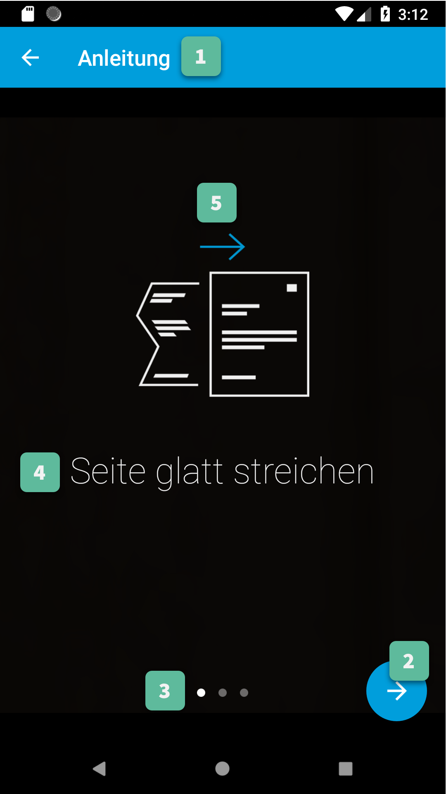
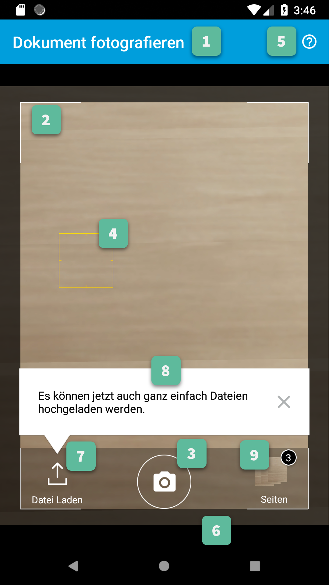

Gini Vision Library for Android¶
Introduction¶
Gini provides an information extraction system for analyzing documents (e. g. invoices or contracts), specifically information such as the document sender or the amount to pay in an invoice.
The Gini Vision Library for Android provides functionality to capture documents with mobile phones. The captured images can be reviewed and rotated to the correct orientation by the user and are optimized on the device to provide the best results when used with the Gini API.
Table of contents¶
Customization Guide¶
Customization of the Views is provided mostly via overriding of app resources: dimensions, strings, colors, texts, etc. Onboarding can also be customized to show your own pages, each consisting of an image and a short text.
Onboarding Screen¶
1. Action Bar¶
All Action Bar customizations except the title are global to all Activities.
Title
Via the string resource named
gv_title_onboarding.Title Color
Via the color resource named
gv_action_bar_title.Back Button Icon
Via images for mdpi, hdpi, xhdpi, xxhdpi, xxxhdpi named
gv_action_bar_back.Background Color
Via the color resource named
gv_action_bar.Status Bar Background Color
Via the color resource named
gv_status_bar.
2. Next Button¶
Icon
Via images for mdpi, hdpi, xhdpi, xxhdpi, xxxhdpi named
gv_onboarding_fab_next.png.Color
Via the color resources named
gv_onboarding_fabandgv_onboarding_fab_pressed.
3. Page Indicators¶
Active
Via images for mdpi, hdpi, xhdpi, xxhdpi, xxxhdpi named
gv_onboarding_indicator_active.png.Inactive
Via images for mdpi, hdpi, xhdpi, xxhdpi, xxxhdpi named
gv_onboarding_indicator_inactive.png.
4. Onboarding Message¶
Color
Via the color resource named
gv_onboarding_message.Text Style
Via overriding the style named
GiniVisionTheme.Onboarding.Message.TextStyle(with parent styleRoot.GiniVisionTheme.Onboarding.Message.TextStyle).Font
Via overriding the style named
GiniVisionTheme.Onboarding.Message.TextStyle(with parent styleRoot.GiniVisionTheme.Onboarding.Message.TextStyle) and setting an item namedgvCustomFontwith the path to the font file in your assets folder.
5. Onboarding Pages¶
Default Pages
Phone
First Page
Image
Via images for mdpi, hdpi, xhdpi, xxhdpi, xxxhdpi named
gv_onboarding_flat.png.Text
Via the string resource named
gv_onboarding_flat.
Second Page
Image
Via images for mdpi, hdpi, xhdpi, xxhdpi, xxxhdpi named
gv_onboarding_parallel.png.Text
Via the string resource named
gv_onboarding_parallel.
Third Page
Image
Via images for mdpi, hdpi, xhdpi, xxhdpi, xxxhdpi named
gv_onboarding_align.png.Text
Via the string resource named
gv_onboarding_align.
Fourth Page
Visible only if the multi-page feature has been enabled.
Image
Via images for mdpi, hdpi, xhdpi, xxhdpi, xxxhdpi named
gv_onboarding_multipage.png.Text
Via the string resource named
gv_onboarding_multipage.
Tablet
First Page
Image
Via images for sw600dp-mdpi, sw600dp-hdpi, sw600dp-xhdpi, sw600dp-xxhdpi, sw600dp-xxxhdpi named
gv_onboarding_lighting.png.Text
Via the string resource named
gv_onboarding_ligthing.
Second Page
Image
Via images for sw600dp-mdpi, sw600dp-hdpi, sw600dp-xhdpi, sw600dp-xxhdpi, sw600dp-xxxhdpi named
gv_onboarding_flat.png.Text
Via the string resource named
gv_onboarding_flat.
Third Page
Image
Via images for sw600dp-mdpi, sw600dp-hdpi, sw600dp-xhdpi, sw600dp-xxhdpi, sw600dp-xxxhdpi named
gv_onboarding_parallel.png.Text
Via the string resource named
gv_onboarding_parallel.
Fourth Page
Image
Via images for sw600dp-mdpi, sw600dp-hdpi, sw600dp-xhdpi, sw600dp-xxhdpi, sw600dp-xxxhdpi named
gv_onboarding_align.png.Text
Via the string resource named
gv_onboarding_align.
Fifth Page
Visible only if the multi-page feature has been enabled.
Image
Via images for mdpi, hdpi, xhdpi, xxhdpi, xxxhdpi named
gv_onboarding_multipage.png.Text
Via the string resource named
gv_onboarding_multipage.
Custom Pages
You can change the number of displayed pages and their content (image and short text) by setting an
ArrayListcontainingOnboardingPageobjects when building aGiniVisioninstance withsetCustomOnboardingPages().If you don’t use
GiniVisionyet you can also provide the list using the extraCameraActivity.EXTRA_IN_ONBOARDING_PAGESfor the Screen API andOnboardingFragmentCompat.createInstance(ArrayList<OnboardingPage>)orOnboardingFragmentStandard.createInstance(ArrayList<OnboardingPage>)for the Component API.Background
Color
Via the color resource named
gv_background. Note: this color resource is global to all Activities.Transparency
Via the string resource named
gv_onboarding_page_fragment_background_alphawhich must contain a real number between[0,1].
Camera Screen¶



1. Action Bar¶
All Action Bar customizations except the title are global to all Activities.
Title
Via the string resource named
gv_title_camera.Title Color
Via the color resource named
gv_action_bar_title.Back Button Icon
Via images for mdpi, hdpi, xhdpi, xxhdpi, xxxhdpi named
gv_action_bar_back.Background Color
Via the color resource named
gv_action_bar.Status Bar Background Color
Via the color resource named
gv_status_bar.
2. Document Corner Guides¶
Color
Via the color resource named
gv_camera_preview_corners.
3. Camera Trigger Button¶
Normal
Via images for mdpi, hdpi, xhdpi, xxhdpi, xxxhdpi named
gv_camera_trigger_default.png.Pressed
Via images for mdpi, hdpi, xhdpi, xxhdpi, xxxhdpi named
gv_camera_trigger_pressed.png.
4. Tap to Focus Indicator¶
Icon
Via images for mdpi, hdpi, xhdpi, xxhdpi, xxxhdpi named
gv_camera_focus_indicator.png.
6. Background¶
Color
Via the color resource named
gv_background. Note: this color resource is global to all Activities.
7. Document Import Button¶
Icon
Via images for mdpi, hdpi, xhdpi, xxhdpi, xxxhdpi named
gv_document_import_icon.png.Subtitle
Text
Via the string resource named
gv_camera_document_import_subtitle.Text Style
Via overriding the style named
GiniVisionTheme.Camera.DocumentImportSubtitle.TextStyle(with parent styleRoot.GiniVisionTheme.Camera.DocumentImportSubtitle.TextStyle).Font
Via overriding the style named
GiniVisionTheme.Camera.DocumentImportSubtitle.TextStyle(with parent styleRoot.GiniVisionTheme.Camera.DocumentImportSubtitle.TextStyle) and setting an item namedgvCustomFontwith the path to the font file in your assets folder.
8. Hints¶
8.1 Document Import Hint¶
Background Color
Via the color resource named
gv_document_import_hint_background.Close Icon Color
Via the color resource name
gv_hint_close.Message
Text
Via the string resource named
gv_document_import_hint_text.Text Style
Via overriding the style named
GiniVisionTheme.Camera.DocumentImportHint.TextStyle(with parent styleRoot.GiniVisionTheme.Camera.DocumentImportHint.TextStyle).Font
Via overriding the style named
GiniVisionTheme.Camera.DocumentImportHint.TextStyle(with parent styleRoot.GiniVisionTheme.Camera.DocumentImportHint.TextStyle) and setting an item namedgvCustomFontwith the path to the font file in your assets folder.
8.2 QR Code Scanner Hint¶
Background Color
Via the color resource named
gv_document_import_hint_background.Close Icon Color
Via the color resource name
gv_hint_close.Message
Text
Via the string resource named
gv_qr_code_scanner_hint_text.Text Style
Via overriding the style named
GiniVisionTheme.Camera.DocumentImportHint.TextStyle(with parent styleRoot.GiniVisionTheme.Camera.DocumentImportHint.TextStyle).Font
Via overriding the style named
GiniVisionTheme.Camera.DocumentImportHint.TextStyle(with parent styleRoot.GiniVisionTheme.Camera.DocumentImportHint.TextStyle) and setting an item namedgvCustomFontwith the path to the font file in your assets folder.
9. Images Stack¶
Badge
Text Style
Via overriding the style named
GiniVisionTheme.Camera.ImageStackBadge.TextStyle(with parent styleRoot.GiniVisionTheme.Camera.ImageStackBadge.TextStyle).Font
Via overriding the style named
GiniVisionTheme.Camera.ImageStackBadge.TextStyle(with parent styleRoot.GiniVisionTheme.Camera.ImageStackBadge.TextStyle) and setting an item namedgvCustomFontwith the path to the font file in your assets folder.Background Color
Via the color resources named
gv_camera_image_stack_badge_backgroundandgv_camera_image_stack_badge_background_border.Background Size
Via the dimension resource named
gv_camera_image_stack_badge_size.
Subtitle
Text
Via the string resource named
gv_camera_image_stack_subtitle.Text Style
Via overriding the style named
GiniVisionTheme.Camera.ImageStackSubtitle.TextStyle(with parent styleRoot.GiniVisionTheme.Camera.ImageStackSubtitle.TextStyle).Font
Via overriding the style named
GiniVisionTheme.Camera.ImageStackSubtitle.TextStyle(with parent styleRoot.GiniVisionTheme.Camera.ImageStackSubtitle.TextStyle) and setting an item namedgvCustomFontwith the path to the font file in your assets folder.
10. QRCode Detected Popup¶
Background Color
Payable QRCode
Via the color resource named
gv_qrcode_detected_popup_background.Unsupported QRCode
Via the color resource named
gv_unsupported_qrcode_detected_popup_background.
Message
Text
Payable QRCode
Via the string resources named
gv_qrcode_detected_popup_message_1andgv_qrcode_detected_popup_message_2.Unsupported QRCode
Via the string resources named
gv_unsupported_qrcode_detected_popup_message_1andgv_unsupported_qrcode_detected_popup_message_2.
Text Style
Payable QRCode
Via overriding the styles named
GiniVisionTheme.Camera.QRCodeDetectedPopup.Message1.TextStyle(with parent styleRoot.GiniVisionTheme.Camera.QRCodeDetectedPopup.Message1.TextStyle) andGiniVisionTheme.Camera.QRCodeDetectedPopup.Message2.TextStyle(with parent styleRoot.GiniVisionTheme.Camera.QRCodeDetectedPopup.Message2.TextStyle).Unsupported QRCode
Via overriding the styles named
GiniVisionTheme.Camera.QRCodeDetectedPopup.UnsupportedMessage1.TextStyle(with parent styleRoot.GiniVisionTheme.Camera.QRCodeDetectedPopup.UnsupportedMessage1.TextStyle) andGiniVisionTheme.Camera.QRCodeDetectedPopup.UnsupportedMessage2.TextStyle(with parent styleRoot.GiniVisionTheme.Camera.QRCodeDetectedPopup.UnsupportedMessage2.TextStyle).
Font
Payable QRCode
Via overriding the styles named
GiniVisionTheme.Camera.QRCodeDetectedPopup.Message1.TextStyle(with parent styleRoot.GiniVisionTheme.Camera.QRCodeDetectedPopup.Message1.TextStyle) andGiniVisionTheme.Camera.QRCodeDetectedPopup.Message2.TextStyle(with parent styleRoot.GiniVisionTheme.Camera.QRCodeDetectedPopup.Message2.TextStyle). and setting an item namedgvCustomFontwith the path to the font file in your assets folder.Unsupported QRCode
Via overriding the styles named
GiniVisionTheme.Camera.QRCodeDetectedPopup.UnsupportedMessage1.TextStyle(with parent styleRoot.GiniVisionTheme.Camera.QRCodeDetectedPopup.UnsupportedMessage1.TextStyle) andGiniVisionTheme.Camera.QRCodeDetectedPopup.UnsupportedMessage2.TextStyle(with parent styleRoot.GiniVisionTheme.Camera.QRCodeDetectedPopup.UnsupportedMessage2.TextStyle). and setting an item namedgvCustomFontwith the path to the font file in your assets folder.
11. Read Storage Permission Dialogs¶
Permission Rationale Dialog
Message
Via the string resource named
gv_storage_permission_rationale.Positive Button Text
Via the string resource named
gv_storage_permission_rationale_positive_button.Negative Button Text
Via the string resource named
gv_storage_permission_rationale_negative_button.Button Color
Via the color resource named
gv_accent. Note: this color resource is global.
Permission Denied Dialog
Message
Via the string resource named
gv_storage_permission_denied.Positive Button Text
Via the string resource named
gv_storage_permission_denied_positive_button.Negative Button Text
Via the string resource named
gv_storage_permission_denied_negative_button.Button Color
Via the color resource named
gv_accent. Note: this color resource is global.
12. No Camera Permission¶
Icon
Via images for mdpi, hdpi, xhdpi, xxhdpi, xxxhdpi named
gv_no_camera.png.Message
Text
Via the string resource named
gv_camera_error_no_permission.
- Text Style
Via overriding the style named
GiniVisionTheme.Camera.Error.NoPermission.TextStyle(with parent styleRoot.GiniVisionTheme.Camera.Error.NoPermission.TextStyle).Font
Via overriding the style named
GiniVisionTheme.Camera.Error.NoPermission.TextStyle(with parent styleRoot.GiniVisionTheme.Camera.Error.NoPermission.TextStyle) and setting an item namedgvCustomFontwith the path to the font file in your assets folder.
Button
Title
Via the string resource named
gv_camera_error_no_permission_button_title.Text Style
Via overriding the style named
GiniVisionTheme.Camera.Error.NoPermission.Button.TextStyle(with parent styleRoot.GiniVisionTheme.Camera.Error.NoPermission.Button.TextStyle).Font
Via overriding the style named
GiniVisionTheme.Camera.Error.NoPermission.Button.TextStyle(with parent styleRoot.GiniVisionTheme.Camera.Error.NoPermission.Button.TextStyle) and setting an item namedgvCustomFontwith the path to the font file in your assets folder.
13. Multi-Page Limit Alert¶
Message
Via the string resource named
gv_document_error_too_many_pages.
- Positive Button Text
Via the string resource named
gv_document_error_multi_page_limit_review_pages_button.
- Negative Button Text
Via the string resource named
gv_document_error_multi_page_limit_cancel_button.
- Button Color
Via the color resource named
gv_accent. Note: this color resource is global.
14. Flash Toggle Button¶
Icon
Via images for mdpi, hdpi, xhdpi, xxhdpi, xxxhdpi named
gv_camera_flash_on.pngandgv_camera_flash_off.png.
Review Screen¶

1. Action Bar¶
All Action Bar customizations except the title are global to all Activities.
Title
Via the string resource named
gv_title_review.Title Color
Via the color resource named
gv_action_bar_title.Back Button Icon
Via images for mdpi, hdpi, xhdpi, xxhdpi, xxxhdpi named
gv_action_bar_back.Background Color
Via the color resource named
gv_action_bar.Status Bar Background Color
Via the color resource named
gv_status_bar.
2. Next Button¶
Icon
Via images for mdpi, hdpi, xhdpi, xxhdpi, xxxhdpi named
gv_review_fab_next.png.Color
Via the color resources named
gv_review_fabandgv_review_fab_pressed.
3. Rotate Button¶
Icon
Via images for mdpi, hdpi, xhdpi, xxhdpi, xxxhdpi named
gv_review_button_rotate.png.Color
Via the color resources named
gv_review_fab_miniandgv_review_fab_mini_pressed.
4. Advice¶
Text
Via the string resource named
gv_review_bottom_panel_text.Text Style
Via overriding the style named
GiniVisionTheme.Review.BottomPanel.TextStyle(with parent styleRoot.GiniVisionTheme.Review.BottomPanel.TextStyle).- Font
Via overriding the style named
GiniVisionTheme.Review.BottomPanel.TextStyle(with parent styleRoot.GiniVisionTheme.Review.BottomPanel.TextStyle) and setting an item namedgvCustomFontwith the path to the font file in your assets folder.Background Color
Via the color resource named
gv_review_bottom_panel_background.
5. Background¶
Color
Via the color resource named
gv_background. Note: this color resource is global to all Activities.
Analysis Screen¶


1. Action Bar¶
All Action Bar customizations except the title are global to all Activities.
Back Button Icon
Via images for mdpi, hdpi, xhdpi, xxhdpi, xxxhdpi named
gv_action_bar_back.Background Color
Via the color resource named
gv_action_bar.Status Bar Background Color
Via the color resource named
gv_status_bar.
2. Activity Indicator¶
Color
Via the color resource named
gv_analysis_activity_indicator.Message
Text
Via the string resource named
gv_analysis_activity_indicator_message.Text Style
Via overriding the style named
GiniVisionTheme.Analysis.AnalysingMessage.TextStyle(with parent styleRoot.GiniVisionTheme.Analysis.AnalysingMessage.TextStyle).Font
Via overriding the style named
GiniVisionTheme.Analysis.AnalysingMessage.TextStyle(with parent styleRoot.GiniVisionTheme.Analysis.AnalysingMessage.TextStyle) and setting an item namedgvCustomFontwith the path to the font file in your assets folder.
3. PDF Info Panel¶
Background Color
Via the color resource named
gv_analysis_pdf_info_background.Filename
Text Style
Via overriding the style named
GiniVisionTheme.Analysis.PdfFilename.TextStyle(with parent styleRoot.GiniVisionTheme.Analysis.PdfFilename.TextStyle).Font
Via overriding the style named
GiniVisionTheme.Analysis.PdfFilename.TextStyle(with parent styleRoot.GiniVisionTheme.Analysis.PdfFilename.TextStyle) and setting an item namedgvCustomFontwith the path to the font file in your assets folder.
Page Count
Text Style
Via overriding the style named
GiniVisionTheme.Analysis.PdfPageCount.TextStyle(with parent styleRoot.GiniVisionTheme.Analysis.PdfPageCount.TextStyle).Font
Via overriding the style named
GiniVisionTheme.Analysis.PdfPageCount.TextStyle(with parent styleRoot.GiniVisionTheme.Analysis.PdfPageCount.TextStyle) and setting an item namedgvCustomFontwith the path to the font file in your assets folder.
4. Error Snackbar¶
Message
Text Style
Via overriding the style named
GiniVisionTheme.Snackbar.Error.TextStyle(with parent styleRoot.GiniVisionTheme.Snackbar.Error.TextStyle).Font
Via overriding the style named
GiniVisionTheme.Snackbar.Error.TextStyle(with parent styleRoot.GiniVisionTheme.Snackbar.Error.TextStyle) and setting an item namedgvCustomFontwith the path to the font file in your assets folder.
Button
Text Style
Via overriding the style named
GiniVisionTheme.Snackbar.Error.Button.TextStyle(with parent styleRoot.GiniVisionTheme.Snackbar.Error.Button.TextStyle).Font
Via overriding the style named
GiniVisionTheme.Snackbar.Error.Button.TextStyle(with parent styleRoot.GiniVisionTheme.Snackbar.Error.Button.TextStyle) and setting an item namedgvCustomFontwith the path to the font file in your assets folder.Retry Button Text
Via the string resource named
gv_document_analysis_error_retry.
Background Color
Via the color resource named
gv_snackbar_error_background.
5. Background¶
Color
Via the color resource named
gv_background. Note: this color resource is global to all Activities.
Multi-Page Review Screen¶


1. Action Bar¶
All Action Bar customizations except the title are global to all Activities.
Title
Via the string resource named
gv_title_multi_page_review.Title Color
Via the color resource named
gv_action_bar_title.Back Button Icon
Via images for mdpi, hdpi, xhdpi, xxhdpi, xxxhdpi named
gv_action_bar_back.Background Color
Via the color resource named
gv_action_bar.Status Bar Background Color
Via the color resource named
gv_status_bar.
2. Page Indicators¶
Text Style
Via overriding the style named
GiniVisionTheme.Review.MultiPage.PageIndicator.TextStyle(with parent styleRoot.GiniVisionTheme.Review.MultiPage.PageIndicator.TextStyle).Font
Via overriding the style named
GiniVisionTheme.Review.MultiPage.PageIndicator.TextStyle(with parent styleRoot.GiniVisionTheme.Review.MultiPage.PageIndicator.TextStyle) and setting an item namedgvCustomFontwith the path to the font file in your assets folder.Background Color
Via the color resource named
gv_multi_page_review_page_indicator_background.
3. Next Button¶
Icon
Via images for mdpi, hdpi, xhdpi, xxhdpi, xxxhdpi named
gv_review_fab_checkmark.png.Color
Via the color resources named
gv_review_fabandgv_review_fab_pressed.
4. Thumbnails Panel¶
Background Color
Via the color resource named
gv_multi_page_review_thumbnails_panel_background.
5. Thumbnail Card¶
Background Color
Via the color resource named
gv_multi_page_review_thumbnail_card_background.
5.1 Badge¶
Text Style
Via overriding the style named
GiniVisionTheme.Review.MultiPage.ThumbnailBadge.TextStyle(with parent styleRoot.GiniVisionTheme.Review.MultiPage.ThumbnailBadge.TextStyle).Font
Via overriding the style named
GiniVisionTheme.Review.MultiPage.ThumbnailBadge.TextStyle(with parent styleRoot.GiniVisionTheme.Review.MultiPage.ThumbnailBadge.TextStyle) and setting an item namedgvCustomFontwith the path to the font file in your assets folder.Background Border Color
Via the color resource named
gv_multi_page_thumbnail_badge_background_border.
5.2 Drag Indicator Bumps¶
- Icon
Via images for mdpi, hdpi, xhdpi, xxhdpi, xxxhdpi namedgv_bumps_icon.png.
5.3 Highlight Strip¶
Color
Via the color resource named
gv_multi_page_thumbnail_highlight_strip.
5.5 Upload Success Icon¶
Background Color
Via the color resource named
gv_multi_page_thumbnail_upload_success_icon_background.Tick Color
Via the color resource named
gv_multi_page_thumbnail_upload_success_icon_foreground.
5.6 Upload Failure Icon¶
Background Color
Via the color resource named
gv_multi_page_thumbnail_upload_failure_icon_background.Cross Color
Via the color resource named
gv_multi_page_thumbnail_upload_failure_icon_foreground.
6. Add Pages Card¶
Icon
Via images for mdpi, hdpi, xhdpi, xxhdpi, xxxhdpi named
gv_multi_page_add_page_icon.png.Subtitle
Text
Via the string resource named
gv_multi_page_review_add_pages_subtitle.Text Style
Via overriding the style named
GiniVisionTheme.Review.MultiPage.AddPagesSubtitle.TextStyle(with parent styleRoot.GiniVisionTheme.Review.MultiPage.AddPagesSubtitle.TextStyle).Font
Via overriding the style named
GiniVisionTheme.Review.MultiPage.AddPagesSubtitle.TextStyle(with parent styleRoot.GiniVisionTheme.Review.MultiPage.AddPagesSubtitle.TextStyle) and setting an item namedgvCustomFontwith the path to the font file in your assets folder.
7. Reorder Pages Tip¶
Text
Via the string resource named
gv_multi_page_review_reorder_pages_tip.Text Style
Via overriding the style named
GiniVisionTheme.Review.MultiPage.ReorderPagesTip.TextStyle(with parent styleRoot.GiniVisionTheme.Review.MultiPage.ReorderPagesTip.TextStyle).Font
Via overriding the style named
GiniVisionTheme.Review.MultiPage.ReorderPagesTip.TextStyle(with parent styleRoot.GiniVisionTheme.Review.MultiPage.ReorderPagesTip.TextStyle) and setting an item namedgvCustomFontwith the path to the font file in your assets folder.
8. Bottom Toolbar¶
Rotate Icon
Via images for mdpi, hdpi, xhdpi, xxhdpi, xxxhdpi named
gv_rotate_icon.png.Delete Icon
Via images for mdpi, hdpi, xhdpi, xxhdpi, xxxhdpi named
gv_delete_icon.png.
9. Image Error¶
Background Color
Via the color resource named
gv_snackbar_error_background.Message
Text Style
Via overriding the style named
GiniVisionTheme.Snackbar.Error.TextStyle(with parent styleRoot.GiniVisionTheme.Snackbar.Error.TextStyle).Font
Via overriding the style named
GiniVisionTheme.Snackbar.Error.TextStyle(with parent styleRoot.GiniVisionTheme.Snackbar.Error.TextStyle) and setting an item namedgvCustomFontwith the path to the font file in your assets folder.
Button
Text Style
Via overriding the style named
GiniVisionTheme.Snackbar.Error.Button.TextStyle(with parent styleRoot.GiniVisionTheme.Snackbar.Error.Button.TextStyle).Font
Via overriding the style named
GiniVisionTheme.Snackbar.Error.Button.TextStyle(with parent styleRoot.GiniVisionTheme.Snackbar.Error.Button.TextStyle) and setting an item namedgvCustomFontwith the path to the font file in your assets folder.Retry Text (Analysis)
Via the string resource named
gv_document_analysis_error_retry.Delete Text (Imported Image)
Via the string resource named
gv_multi_page_review_delete_invalid_document.
10. Imported Image Delete Last Page Dialog¶
Message
Via the string resource named
gv_multi_page_review_file_import_delete_last_page_dialog_message.Positive Button Title
Via the string resource named
gv_multi_page_review_file_import_delete_last_page_dialog_positive_button.Negative Button Title
Via the string resource named
gv_multi_page_review_file_import_delete_last_page_dialog_negative_button.Button Color
Via the color resource named
gv_accent.
Help Screen¶

1. Action Bar¶
All Action Bar customizations except the title are global to all Activities.
Title
Via the string resource named
gv_title_help.Title Color
Via the color resource named
gv_action_bar_title.Back Button Icon
Via images for mdpi, hdpi, xhdpi, xxhdpi, xxxhdpi named
gv_action_bar_back.Background Color
Via the color resource named
gv_action_bar.Status Bar Background Color
Via the color resource named
gv_status_bar.
3. Help List Item¶
Background Color
Via the color resource name
gv_help_item_background.Text Style
Via overriding the style named
GiniVisionTheme.Help.Item.TextStyle(with parent styleRoot.GiniVisionTheme.Help.Item.TextStyle).Font
Via overriding the style named
GiniVisionTheme.Help.Item.TextStyle(with parent styleRoot.GiniVisionTheme.Help.Item.TextStyle) and setting an item namedgvCustomFontwith the path to the font file in your assets folder.
Photo Tips Screen¶

1. Action Bar¶
All Action Bar customizations except the title are global to all Activities.
Title
Via the string resource named
gv_title_photo_tips.Title Color
Via the color resource named
gv_action_bar_title.Back Button Icon
Via images for mdpi, hdpi, xhdpi, xxhdpi, xxxhdpi named
gv_action_bar_back.Background Color
Via the color resource named
gv_action_bar.Status Bar Background Color
Via the color resource named
gv_status_bar.
2. Background¶
Color
Via the color resource named
gv_photo_tips_activity_background.
3. Header¶
Text Style
Via overriding the style named
GiniVisionTheme.Help.PhotoTips.Header.TextStyle(with parent styleRoot.GiniVisionTheme.Help.PhotoTips.Header.TextStyle).Font
Via overriding the style named
GiniVisionTheme.Help.PhotoTips.Header.TextStyle(with parent styleRoot.GiniVisionTheme.Help.PhotoTips.Header.TextStyle) and setting an item namedgvCustomFontwith the path to the font file in your assets folder.
4. Tip¶
Text Style
Via overriding the style named
GiniVisionTheme.Help.PhotoTips.Tip.TextStyle(with parent styleRoot.GiniVisionTheme.Help.PhotoTips.Tip.TextStyle).Font
Via overriding the style named
GiniVisionTheme.Help.PhotoTips.Tip.TextStyle(with parent styleRoot.GiniVisionTheme.Help.PhotoTips.Tip.TextStyle) and setting an item namedgvCustomFontwith the path to the font file in your assets folder.
4.1 Good Lighting¶
Icon
Via images for mdpi, hdpi, xhdpi, xxhdpi, xxxhdpi named
gv_photo_tip_lighting.png.
4.2 Document Should be Flat¶
Icon
Via images for mdpi, hdpi, xhdpi, xxhdpi, xxxhdpi named
gv_photo_tip_flat.png.
4.3 Device Parallel to Document¶
Icon
Via images for mdpi, hdpi, xhdpi,xxhdpi, xxxhdpi named
gv_photo_tip_parallel.png.
4.4 Document Aligned with Corner Guides¶
Icon
Via images for mdpi, hdpi, xhdpi,xxhdpi, xxxhdpi named
gv_photo_tip_align.png.
4.5 Document with Multiple Pages¶
Icon
Via images for mdpi, hdpi, xhdpi,xxhdpi, xxxhdpi named
gv_photo_tip_multipage.png.
5. Back To Camera Button¶
Background Color
Via the color resource named
gv_photo_tips_button.Text Color
Via the color resource named
gv_photo_tips_button_text.
Supported Formats Screen¶

1. Action Bar¶
All Action Bar customizations except the title are global to all Activities.
Title
Via the string resource named
gv_title_supported_formats.Title Color
Via the color resource named
gv_action_bar_title.Back Button Icon
Via images for mdpi, hdpi, xhdpi, xxhdpi, xxxhdpi named
gv_action_bar_back.Background Color
Via the color resource named
gv_action_bar.Status Bar Background Color
Via the color resource named
gv_status_bar.
2. Background¶
Color
Via the color resource named
gv_supported_formats_activity_background.
3. Header¶
Text Style
Via overriding the style named
GiniVisionTheme.Help.SupportedFormats.Item.Header.TextStyle(with parent styleRoot.GiniVisionTheme.Help.SupportedFormats.Item.Header.TextStyle).Font
Via overriding the style named
GiniVisionTheme.Help.SupportedFormats.Item.Header.TextStyle(with parent styleRoot.GiniVisionTheme.Help.SupportedFormats.Item.Header.TextStyle) and setting an item namedgvCustomFontwith the path to the font file in your assets folder.
4. Format Info List Item¶
Text Style
Via overriding the style named
GiniVisionTheme.Help.SupportedFormats.Item.TextStyle(with parent styleRoot.GiniVisionTheme.Help.SupportedFormats.Item.TextStyle).Font
Via overriding the style named
GiniVisionTheme.Help.SupportedFormats.Item.TextStyle(with parent styleRoot.GiniVisionTheme.Help.SupportedFormats.Item.TextStyle) and setting an item namedgvCustomFontwith the path to the font file in your assets folder.Background Color
Via overriding the style named
gv_supported_formats_item_background.
4.1 Supported Format Icon¶
Background Color
Via the color resource named
gv_supported_formats_item_supported_icon_background.Tick Color
Via the color resource named
gv_supported_formats_item_supported_icon_foreground.
4.2 Unsupported Format Icon¶
Background Color
Via the color resource named
gv_supported_formats_item_unsupported_icon_background.Cross Color
Via the color resource named
gv_supported_formats_item_unsupported_icon_foreground.
File Import Screen¶

1. Action Bar¶
All Action Bar customizations except the title are global to all Activities.
Title
Via the string resource named
gv_title_file_import.Title Color
Via the color resource named
gv_action_bar_title.Back Button Icon
Via images for mdpi, hdpi, xhdpi, xxhdpi, xxxhdpi named
gv_action_bar_back.Background Color
Via the color resource named
gv_action_bar.Status Bar Background Color
Via the color resource named
gv_status_bar.
2. Background¶
Color
Via the color resource named
gv_file_import_activity_background.
3. Header¶
Text
Via overriding the string resource named
gv_file_import_header.Text Style
Via overriding the style named
GiniVisionTheme.Help.FileImport.Header.TextStyle(with parent styleRoot.GiniVisionTheme.Help.FileImport.Header.TextStyle).Font
Via overriding the style named
GiniVisionTheme.Help.FileImport.Header.TextStyle(with parent styleRoot.GiniVisionTheme.Help.FileImport.Header.TextStyle) and setting an item namedgvCustomFontwith the path to the font file in your assets folder.
5. Section¶
5.1 Number¶
Background Color
Via the color resource named
gv_file_import_section_number_background.Text Color
Via the color resource named
gv_file_import_section_number.
5.2 Title¶
Text Style
Via overriding the style named
GiniVisionTheme.Help.FileImport.Section.Title.TextStyle(with parent styleRoot.GiniVisionTheme.Help.FileImport.Section.Title.TextStyle).Font
Via overriding the style named
GiniVisionTheme.Help.FileImport.Section.Title.TextStyle(with parent styleRoot.GiniVisionTheme.Help.FileImport.Section.Title.TextStyle) and setting an item namedgvCustomFontwith the path to the font file in your assets folder.
5.3 Body¶
Text Style
Via overriding the style named
GiniVisionTheme.Help.FileImport.Section.Body.TextStyle(with parent styleRoot.GiniVisionTheme.Help.FileImport.Section.Body.TextStyle).Font
Via overriding the style named
GiniVisionTheme.Help.FileImport.Section.Body.TextStyle(with parent styleRoot.GiniVisionTheme.Help.FileImport.Section.Body.TextStyle) and setting an item namedgvCustomFontwith the path to the font file in your assets folder.
6. Sections¶
Section 1
Title
Via overriding the string resource named
gv_file_import_section_1_title.Body
Via overriding the string resource named
gv_file_import_section_1_body.Illustration
Via images for mdpi, hdpi, xhdpi, xxhdpi, xxxhdpi named
gv_file_import_section_1_illustration.png.Note: For creating your custom illustration you may use this template from the Gini Vision Library UI Assets repository.
Section 2
Title
Via overriding the string resource named
gv_file_import_section_2_title.Body
Via overriding the string resource named
gv_file_import_section_2_body.Illustration
Via images for mdpi, hdpi, xhdpi, xxhdpi, xxxhdpi named
gv_file_import_section_2_illustration.png.Note: For creating your custom illustration you may use this template from the Gini Vision Library UI Assets repository.
Section 3
Title
Via overriding the string resource named
gv_file_import_section_3_title.Body
Via overriding the string resource named
gv_file_import_section_3_bodyandgv_file_import_section_3_body_2.Illustration
Via images for mdpi, hdpi, xhdpi, xxhdpi, xxxhdpi named
gv_file_import_section_3_illustration.png. Note: For creating your custom illustration you may use this template from the Gini Vision Library UI Assets repository.Clear app defaults section
- Title
Via overriding the string resource named
gv_file_import_section_3_clear_app_defaults_title.- Body
Via overriding the string resource named
gv_file_import_section_3_clear_app_defaults_body.
Clear Defaults Dialog¶
1. Message¶
Via the string resource named gv_file_import_default_app_dialog_message.
1.1 File Type¶
PDF
Via the string resources named
gv_file_import_default_app_dialog_pdf_file_type.Image
Via the string resources named
gv_file_import_default_app_dialog_image_file_type.Document (Other)
Via the string resources named
gv_file_import_default_app_dialog_document_file_type.
2. Positive Button Title¶
Via the string resources named gv_file_import_default_app_dialog_positive_button.
3. Negative Button Title¶
Via the string resources named gv_file_import_default_app_dialog_negative_button.
Event Tracking¶
In version 3.12.0 we introduced the possibility to track various events which occur during the usage of the Gini Vision Library.
To subscribe to the events you need to implement the EventTracker interface and pass it to the
builder when creating a new GiniVision instance.
GiniVision.newInstance()
.setEventTracker(new MyEventTracker());
.build();
In MyEventTracker you can handle the events you are interested in.
class MyEventTracker implements EventTracker {
@Override
public void onCameraScreenEvent(final Event<CameraScreenEvent> event) {
switch (event.getType()) {
case TAKE_PICTURE:
// handle the picture taken event
break;
case HELP:
// handle the show help event
break;
case EXIT:
// handle the exit event
break;
}
}
@Override
public void onOnboardingScreenEvent(final Event<OnboardingScreenEvent> event) {
(...)
}
@Override
public void onAnalysisScreenEvent(final Event<AnalysisScreenEvent> event) {
(...)
}
@Override
public void onReviewScreenEvent(final Event<ReviewScreenEvent> event) {
(...)
}
}
Note
If you use the Screen API all events will be triggered automatically.
If you use the Component API some events will not be triggered (for ex. events which rely on Activity#onBackPressed()). You can
check in the table below whether all the events you are interested in are triggered.
To manually trigger events just call the relevant method of your EventTracker implementation with the required event.
Events¶
Event types are partitioned into different domains according to the screens that they appear at. Each domain has a number of event types. Some events may supply additional details in a map.
| API | Domain | Event enum value and details map keys | Comment | Introduced in (updated in) |
|---|---|---|---|---|
| Screen + Component | Onboarding | OnboardingScreenEvent.START |
Onboarding started | 3.12.0 |
| Screen + Component | Onboarding | OnboardingScreenEvent.FINISH |
User completes onboarding | 3.12.0 |
| Screen | Camera Screen | CameraScreenEvent.EXIT |
User closes the camera screen | 3.12.0 |
| Screen | Camera Screen | CameraScreenEvent.HELP |
User taps “Help” on the camera screen | 3.12.0 |
| Screen + Component | Camera Screen | CameraScreenEvent.TAKE_PICTURE |
User takes a picture | 3.12.0 |
| Screen | Review Screen | ReviewScreenEvent.BACK |
User goes back from the review screen | 3.12.0 |
| Screen + Component | Review Screen | ReviewScreenEvent.NEXT |
User advances from the review screen | 3.12.0 |
| Screen + Component | Review Screen | ReviewScreenEvent.UPLOAD_ERROR
ReviewScreenEvent.UPLOAD_ERROR_DETAILS_MAP_KEY.MESSAGE
ReviewScreenEvent.UPLOAD_ERROR_DETAILS_MAP_KEY.ERROR_OBJECT |
Upload error in the review screen | 3.15.0 |
| Screen | Analysis Screen | AnalysisScreenEvent.CANCEL |
User cancels the process during analysis | 3.12.0 |
| Screen + Component | Analysis Screen | AnalysisScreenEvent.ERROR
AnalysisScreenEvent.ERROR_DETAILS_MAP_KEY.MESSAGE
AnalysisScreenEvent.ERROR_DETAILS_MAP_KEY.ERROR_OBJECT |
The analysis ended with an error. | 3.12.0 (3.15.0) |
| Screen + Component | Analysis Screen | AnalysisScreenEvent.RETRY |
The user decides to retry after an analysis error. | 3.12.0 |
The supported events are listed for each screen in a dedicated enum. You can view these enums in our Javadoc.
Updating to 4.0.0¶
Migrating to this version should be straightforward. The only change which might have a big impact is that we now use the AndroidX libraries instead of the discontinued Android Support libraries.
AndroidX¶
We postponed migrating to AndroidX as long as we could, but we encountered a critical issue when a client uses AndroidX with GVL 4.0.0. We expect most apps by now have migrated or will migrate in the near future to AndroidX.
In case you haven’t migrated to AndroidX and would like to update to GVL 4.0.0 you can find extensive documentation about migrating to AndroidX in the official Android documentation.
Updating to 3.0.0¶
API Changes¶
We introduced some significant changes to the library API without breaking backwards compatibility. These changes were required as the old API was not extensible and it limited us in what features we could build without making the library integration too difficult. The new API allows us more flexibility when adding new features while making the integration even easier as before.
We are keeping network code out of the Gini Vision Library in order to allow clients freedom in choosing their desired network implementation. The multi-page feature required us to add more network related logic to the library which would have made integration more difficult.
We decided to implement a plugin architecture and introduced a network layer with a single interface
called GiniVisionNetworkService. This declares all the required network tasks and is used in all
the screens where documents have to be sent to the Gini API. The GiniVisionNetworkService
implementation is outside of the scope of the Gini Vision Library and has to be specified before
launching the library.
We provide a default networking implementation in the Gini Vision Network Library. Adding this to your app along with the Gini Vision Library will allow you to quickly integrate Gini invoice scanning.
The multi-page feature requires the new API. Existing features will continue to work without any changes, but new features we add in the future will require the new API.
Note
To easily compare the old API to the new one check out the Gini Vision Library Android Example App. There we’ve set up a legacy and
a newest flavor. legacy shows how integration was performed in previous versions and
newest shows how integration should be performed using the new API.
GiniVision Singleton¶
We introduced the GiniVision class as the single entry-point for configuring and interacting
with the Gini Vision Library.
To configure and create a new instance use the GiniVision.Builder returned by
GiniVision.newInstance(). The builder creates a new GiniVision singleton which you
can later destroy with GiniVision.getInstance().cleanup(). This will also free up any resources used
by the Gini Vision Library. You should call cleanup() after the Gini Vision Library returned
control to your application and your app is not using it anymore.
Configuration¶
Configuration is performed when building a new GiniVision instance. Previously configuration was
done by setting Activity extras and using the GiniVisionFeatureConfiguration.
Set Custom Onboarding Pages¶
GiniVision.newInstance()
.setCustomOnboardingPages(getOnboardingPages())
.build();
Intent intent = new Intent(this, CameraActivity.class);
intent.putParcelableArrayListExtra(CameraActivity.EXTRA_IN_ONBOARDING_PAGES, myOnboardingPages());
Disable Showing Onboarding on the First Run¶
GiniVision.newInstance()
.setShouldShowOnboardingAtFirstRun(false)
.build();
Intent intent = new Intent(this, CameraActivity.class);
intent.putExtra(CameraActivity.EXTRA_IN_SHOW_ONBOARDING_AT_FIRST_RUN, false);
Force Showing of the Onboarding¶
GiniVision.newInstance()
.setShouldShowOnboarding(true)
.build();
Intent intent = new Intent(this, CameraActivity.class);
intent.putExtra(CameraActivity.EXTRA_IN_SHOW_ONBOARDING, true);
Close Library on Pressing the Back Button From Any Activity in the Library¶
This option has been removed.
Intent intent = new Intent(this, CameraActivity.class);
intent.putExtra(CameraActivity.EXTRA_IN_BACK_BUTTON_SHOULD_CLOSE_LIBRARY, true);
Enable Document Import from the Camera Screen¶
GiniVision.newInstance()
.setDocumentImportEnabledFileTypes(DocumentImportEnabledFileTypes.PDF_AND_IMAGES)
.build();
Intent intent = new Intent(this, CameraActivity.class);
final GiniVisionFeatureConfiguration giniVisionFeatureConfiguration =
GiniVisionFeatureConfiguration.buildNewConfiguration()
.setDocumentImportEnabledFileTypes(DocumentImportEnabledFileTypes.PDF_AND_IMAGES)
.build();
intent.putExtra(CameraActivity.EXTRA_IN_GINI_VISION_FEATURE_CONFIGURATION,
giniVisionFeatureConfiguration);
Enable File Import (“open with”)¶
GiniVision.newInstance()
.setFileImportEnabled(true)
.build();
Intent intent = new Intent(this, CameraActivity.class);
final GiniVisionFeatureConfiguration giniVisionFeatureConfiguration =
GiniVisionFeatureConfiguration.buildNewConfiguration()
.setFileImportEnabled(true)
.build();
intent.putExtra(CameraActivity.EXTRA_IN_GINI_VISION_FEATURE_CONFIGURATION,
giniVisionFeatureConfiguration);
Enable QRCode Scanning¶
GiniVision.newInstance()
.setQRCodeScanningEnabled(true)
.build()
Intent intent = new Intent(this, CameraActivity.class);
final GiniVisionFeatureConfiguration giniVisionFeatureConfiguration =
GiniVisionFeatureConfiguration.buildNewConfiguration()
.setQRCodeScanningEnabled(true)
.build();
intent.putExtra(CameraActivity.EXTRA_IN_GINI_VISION_FEATURE_CONFIGURATION,
giniVisionFeatureConfiguration);
File Import¶
We moved methods in GiniVisionFileImport to GiniVision in order to simplify interaction.
Starting from this version GiniVision is the go-to class for interaction with the Gini Vision
Library.
Create a Document from the Imported File¶
When using the Component API you need to create a Document from the imported file and pass the
Document either to the ReviewActivity (ReviewFragment) or the AnalysisActivity
(AnalysisFragment).
GiniVision.createDocumentForImportedFile(...);
GiniVisionFileImport.createDocumentForImportedFile(..);
Networking Integration¶
We don’t provide network code with the Gini Vision Library in order to allow clients to use their desired networking implementation. In previous versions integration of network code was achieved either by subclassing Activities and overriding methods or by implementing Fragment listeners.
Starting from this version we unified all required network tasks into the
GiniVisionNetworkService interface. The Gini Vision Library uses this interface to request
document upload and analysis. We also added the GiniVisionNetworkApi to declare network tasks
which may be called by the client outside of the Gini Vision Library (e.g. for sending feedback).
When using the Screen API the extractions are returned to your app in the EXTRA_OUT_EXTRACTIONS
Bundle in the CameraActivity’s result Intent. This Bundle contains extraction label Strings as
keys and GiniVisionSpecificExtraction as values.
For the Component API the extractions are returned in the onExtractionsAvailable(Map<String,
GiniVisionSpecificExtraction>) method of the CameraFragmentListener,
ReviewFragmentListener or AnalysisFragmentListener.
Gini Vision Network Library¶
The Gini Vision Network Library provides a default implementation of the networking interfaces. By using this library you can quickly integrate invoice scanning in your application.
To use it add the gini-vision-network-lib dependency to your app’s build.gradle along with
the Gini Vision Library:
repositories {
...
maven {
url 'https://repo.gini.net/nexus/content/repositories/open'
}
}
dependencies {
...
implementation 'net.gini:gini-vision-lib:3.0.0'
implementation 'net.gini:gini-vision-network-lib:3.0.0'
}
For the Gini Vision Library to be aware of the default implementations create the instances and pass
them to the builder of GiniVision:
GiniVisionDefaultNetworkService networkService =
GiniVisionDefaultNetworkService.builder((Context) this)
.setClientCredentials(myClientId, myClientSecret, myEmailDomain)
.build();
GiniVisionDefaultNetworkApi networkApi =
GiniVisionDefaultNetworkApi.builder()
.withGiniVisionDefaultNetworkService(networkService)
.build();
GiniVision.newInstance()
.setGiniVisionNetworkService(networkService)
.setGiniVisionNetworkApi(networkApi)
.build();
Subclassing the CameraActivity, ReviewActivity and AnalysisActivity is not required
anymore. Likewise adding network code to your implementations of the CameraFragmentListener,
ReviewFragmentListener and AnalysisFragmentListener is not required. All related methods
have been deprecated, but will still be used, if there is no GiniVision instance.
Warning
A GiniVision instance is required to use the new network integration API. Without a
GiniVision instance the Gini Vision Library will fall back to the previous API and requires
Activity subclasses or Fragment listeners for adding network calls.
Custom Networking Implementation¶
You can also provide your own networking by implementing the GiniVisionNetworkService and the
GiniVisionNetworkApi interfaces. Pass your instances to the builder of GiniVision as shown
above.
UI Changes¶
Camera Screen¶
We added a subtitle to the document import button to make the purpose of the button more clear. You
can customize the text via the string resource named gv_camera_document_import_subtitle and the
text style via overriding the style named
GiniVisionTheme.Camera.DocumentImportSubtitle.TextStyle (make sure to use the root parent style
Root.GiniVisionTheme.Camera.DocumentImportSubtitle.TextStyle).
Onboarding Screen¶
We made the background opaque. Usability testing showed that the semi-transparent background lead users to believe they should already perform the tips while in the onboarding.
Multi-Page Document Scanning¶
The API changes detailed above allowed us to introduce multi-page document scanning. With this feature users can take or import pictures of invoice pages. The Gini API then analyzes the pages as a single invoice and extracts the required payment information.
Requirements¶
To use this feature you need to use GiniVision along with the new networking integration.
Enable Multi-Page¶
Multi-page scanning is disabled by default. Enable it when building a new GiniVision instance:
GiniVision.newInstance()
.setMultiPageEnabled(true)
.build();
Camera Screen¶
When multi-page is enabled, then taken or imported pictures are shown in an image stack in the bottom right corner of the Camera Screen. When users tap the stack the Multi-Page Review Screen is launched.
Customizing the UI¶
- Images stack badge background and text style
- Images stack subtitle
For detailed customization options consult the Javadoc of the CameraActivity.
Multi-Page Review Screen¶
In this screen users can review their images. They can also reordered, rotate and delete them. Users may add more pages by tapping on the “Add pages” button or going back to the Camera Screen.
The first time users take a picture the Multi-Page Review Screen is launched. Subsequent pictures are added to the image stack in the Camera Screen and users can tap it to go to the Multi-Page Review Screen.
Image uploads start as soon as users enter this screen. Upload activity indicators are shown on each image thumbnail. If the uploads are successfull green checkmarks are displayed on the image thumbnails. When all uploads were successfull the user can proceed to the Analysis Screen. If uploads failed, then red crosses are shown on the image thumbnails and users may retry or delete the failed images.
Note
There is no Standard Fragment for the Multi-Page Review Screen. From this version on we only provide Android Support Library Fragments to simplify the UI code and we are confident, that today the Android Support Library is a must-have for every Android application.
Customizing the UI¶
- Page indicator
- Next button
- Background colors
- Thumbnail cards
- Thumbnail activity indicator
- Thumbnail upload success and failure icons
- Add page icon and subtitle
- Reorder pages tip
- Error message background color and text styles
- Delete last page confirmation dialog
For detailed customization options consult the Javadoc of the MultiPageReviewActivity.
Importing Multiple Images¶
To allow users to send multiple images (jpeg, png and gif) to the Gini Vision Library from other apps through your app you need to register one of your Activities to receive multiple images.
Registering to Receive Multiple Image Files¶
Add the following intent filter to the Activity in your AndroidManifest.xml you wish to receive multiple incoming images:
<activity android:name=".ui.MyActivity">
<intent-filter android:label="@string/label_for_open_with">
<action android:name="android.intent.action.VIEW" />
<action android:name="android.intent.action.SEND" />
<action android:name="android.intent.action.SEND_MULTIPLE" />
<category android:name="android.intent.category.DEFAULT" />
<data android:mimeType="image/*" />
</intent-filter>
</activity>
Importing multiple PDFs is not supported so the intent filter for PDFs must not contain the
SEND_MULTIPLE action. Simply add a separate intent filter to be able to receive single PDF
files:
<activity android:name=".ui.MyActivity">
<intent-filter android:label="@string/label_for_open_with">
<action android:name="android.intent.action.VIEW" />
<action android:name="android.intent.action.SEND" />
<category android:name="android.intent.category.DEFAULT" />
<data android:mimeType="application/pdf" />
</intent-filter>
</activity>
Handling Imported Files¶
When you use the multi-page feature you always have to call the new
GiniVision.createIntentForImportedFiles() method or if you use the Component API the
GiniVision.createDocumentForImportedFiles() method.
Note
You don’t have to check whether the user imported one or multiple files. Simply use
GiniVision.createIntentForImportedFiles() or GiniVision.createDocumentForImportedFiles()
to handle one or more incoming files.
When your app is requested to handle one or multiple images or a PDF your Activity (declaring the intent filter
shown before) is launched or resumed (onNewIntent(Intent)) with an Intent having ACTION_VIEW,
ACTION_SEND or ACTION_SEND_MULTIPLE.
Important
To make sure your application can read the shared file declare and request the
READ_EXTERNAL_STORAGE permission before accessing the Uri or before starting the Gini
Vision Library.
Checking whether the Intent has the required action:
String action = intent.getAction();
if (Intent.ACTION_VIEW.equals(action)
|| Intent.ACTION_SEND.equals(action)
|| Intent.ACTION_SEND_MULTIPLE.equals(action)) {
...
}
Using the Screen API, create an Intent for launching the Gini Vision Library with
GiniVisionFileImport.createIntentForImportedFiles(). This method requires a callback with which
it will notify your app about the outcome of the import process. Since importing multiple files can
take some seconds (images are processed and compressed), you should show an activity indicator until
one of the callback methods is invoked.
// Token to request cancellation of the file import
private CancellationToken mFileImportCancellationToken;
void startGiniVisionLibraryForImportedFile(final Intent importedFileIntent) {
showActivityIndicator();
mFileImportCancellationToken = GiniVision.getInstance().createIntentForImportedFiles(
importedFileIntent, this,
new AsyncCallback<Intent, ImportedFileValidationException>() {
@Override
public void onSuccess(final Intent result) {
mFileImportCancellationToken = null;
hideActivityIndicator();
startActivityForResult(result, REQUEST_SCAN);
}
@Override
public void onError(final ImportedFileValidationException exception) {
mFileImportCancellationToken = null;
hideActivityIndicator();
String message = "File cannot be analyzed";
if (exception.getValidationError() != null) {
switch (e.getValidationError()) {
case TYPE_NOT_SUPPORTED:
message = "File type not supported.";
break;
case SIZE_TOO_LARGE:
message = "File too large, must be less than 10 MB.";
break;
case TOO_MANY_PDF_PAGES:
message = "Pdf must have less than 10 pages.";
break;
}
}
new AlertDialog.Builder(this)
.setMessage(message)
.setPositiveButton("OK", new DialogInterface.OnClickListener() {
@Override
public void onClick(final DialogInterface dialogInterface, final int i) {
finish();
}
})
.show();
}
@Override
public void onCancelled() {
mFileImportCancellationToken = null;
hideActivityIndicator();
}
});
}
The returned Intent will launch either the MultiPageReviewActivity or the AnalysisActivity (the one from the Gini Vision Library - subclassing the AnalysisActivity is not required anymore). For example PDFs cannot be reviewed by the user and for those the AnalysisActivity is launched.
For the Component API, create a Document with
GiniVisionFileImport.createDocumentForImportedFiles(). Like the previous method this one
requires a callback, too. You should show an activity indicator until one of the callback methods is
invoked.
The MultiPageReviewFragment may only be used with reviewable documents. Therefore, it is important to check whether the document is reviewable or not:
// Token to request cancellation of the file import
private CancellationToken mFileImportCancellationToken;
void startGiniVisionLibraryForImportedFile(final Intent importedFileIntent) {
showActivityIndicator();
mFileImportCancellationToken = GiniVision.getInstance().createDocumentForImportedFiles(
importedFileIntent, mActivity,
new AsyncCallback<Document, ImportedFileValidationException>() {
@Override
public void onSuccess(@NonNull final Document result) {
if (result.isReviewable()) {
launchMultiPageReviewScreen();
} else {
launchAnalysisScreen(result);
}
mActivity.finish();
}
@Override
public void onError(
@NonNull final ImportedFileValidationException exception) {
mFileImportCancellationToken = null;
hideActivityIndicator();
String message = "File cannot be analyzed";
if (exception.getValidationError() != null) {
switch (e.getValidationError()) {
case TYPE_NOT_SUPPORTED:
message = "File type not supported.";
break;
case SIZE_TOO_LARGE:
message = "File too large, must be less than 10 MB.";
break;
case TOO_MANY_PDF_PAGES:
message = "Pdf must have less than 10 pages.";
break;
}
}
new AlertDialog.Builder(this)
.setMessage(message)
.setPositiveButton("OK", new DialogInterface.OnClickListener() {
@Override
public void onClick(final DialogInterface dialogInterface, final int i) {
finish();
}
})
.show();
}
@Override
public void onCancelled() {
}
});
}
Updating to 2.5.0¶
Google Play Services¶
With version 2.5.0 we added the Google Mobile Vision API dependency which is part of the Google Play Services. We only depend on the play-services-vision package.
In case you already use the Google Mobile Vision API there might be a conflict related to the <meta-data android:name="com.google.android.gms.vision.DEPENDENCIES"> tag after updating to 2.5.0. If this is the case add the attribute tools:replace="android:value". Make sure that you add barcode to the android:value tag.
The following snippet shows how to update the tag, if the app has been using text recognition before updating to 2.5.0:
<meta-data
android:name="com.google.android.gms.vision.DEPENDENCIES"
tools:replace="android:value"
android:value="ocr,barcode"/>
QR Code Scanning¶
By using the Google Mobile Vision API the GVL can read payment data from QR Codes. We support the BezahlCode and EPC069-12 (Stuzza (AT) and GiroCode (DE)) formats.
When a supported QR Code is detected and read with valid payment data a popup is shown in the Camera Screen. The user may tap the popup to use the payment data directly without the need to analyse the document.
QR Code Scanning is available on devices running Android 4.2.2 Gingerbread or later with Google Play Services installed.
Enable QR Code Scanning¶
This feature is disabled by default. To enable the QR Code scanning using the Screen API pass a GiniVisionFeatureConfiguration to the CameraActivity with QR Code scanning set as enabled:
// Enable QR Code scanning
final GiniVisionFeatureConfiguration giniVisionFeatureConfiguration =
GiniVisionFeatureConfiguration.buildNewConfiguration()
.setQRCodeScanningEnabled(true)
.build();
intent.putExtra(CameraActivity.EXTRA_IN_GINI_VISION_FEATURE_CONFIGURATION,
giniVisionFeatureConfiguration);
For the Component API use the factory method of the CameraFragmentCompat or CameraFragmentStandard:
// Enable QR Code scanning
final GiniVisionFeatureConfiguration giniVisionFeatureConfiguration =
GiniVisionFeatureConfiguration.buildNewConfiguration()
.setQRCodeScanningEnabled(true)
.build();
CameraFragmentCompat.createInstance(giniVisionFeatureConfiguration);
Important
When your application is installed Google Mobile Services will download libraries to the device in order to do QR Code detection. If another app already uses QR Code detection on the device the library won’t be downloaded again. Under certain circumstances (user not online, slow connection or lack of sufficient storage space) the libraries will not be ready at the time your app starts the Camera Screen and QR Code detection will be silently disabled until the next time the Camera Screen starts.
Handle the QR Code¶
After the user tapped on the QR Code detected popup the CameraFragmentListener#onQRCodeAvailable(QRCodeDocument) method is invoked. In this method you should upload the QRCodeDocument to the Gini API, retrieve the extractions and exit the Gini Vision Library to use the payment data in your application. You should also send feedback for the QR Codes. Basically you need to execute the same steps as for images, but instead of uploading an image you upload the contents of the QRCodeDocument.
Using the Screen API extend the CameraActivity and override the onQRCodeAvailable() method where you can make use of the new methods in the CameraActivity to show/hide an activity indicator and to show an error snackbar. The new methods are shown on highlighted lines.
@Override
public void onQRCodeAvailable(@NonNull final QRCodeDocument qrCodeDocument) {
// Show an activity indicator on the Camera Screen
showActivityIndicatorAndDisableInteraction();
// Upload the contents of the QRCodeDocument using
// the Gini API SDK (http://developer.gini.net/gini-sdk-android/)
mDocumentTaskManager
.createDocument(qrCodeDocument.getData(), null, null)
.onSuccessTask(
new Continuation<net.gini.android.models.Document, Task<net.gini.android.models.Document>>() {
@Override
public Task<net.gini.android.models.Document> then(
Task<net.gini.android.models.Document> task)
throws Exception {
net.gini.android.models.Document giniDocument = task.getResult();
return mDocumentTaskManager.pollDocument(giniDocument);
}
})
.onSuccessTask(
new Continuation<net.gini.android.models.Document, Task<Map<String, SpecificExtraction>>>() {
@Override
public Task<Map<String, SpecificExtraction>> then(
Task<net.gini.android.models.Document> task)
throws Exception {
net.gini.android.models.Document giniDocument = task.getResult();
return mDocumentTaskManager.getExtractions(giniDocument);
}
})
.continueWith(
new Continuation<Map<String, SpecificExtraction>, Map<String, SpecificExtraction>>() {
@Override
public Map<String, SpecificExtraction> then(
final Task<Map<String, SpecificExtraction>> task)
throws Exception {
// Hide the activity indicator
hideActivityIndicatorAndEnableInteraction();
// Show an error if something went wrong
if (task.isFaulted()) {
showError("Could not use the QR Code. Try again or take a picture of your document.", 4000);
return null;
}
// Add the extractions to the activity's result and finish with RESULT_OK
Map<String, SpecificExtraction> extractions = task.getResult();
final Intent result = new Intent();
final Bundle extractionsBundle = getExtractionsBundle(extractions);
result.putExtra(MainActivity.EXTRA_OUT_EXTRACTIONS, extractionsBundle);
setResult(RESULT_OK, result);
finish();
return null;
}
});
}
With the Component API you implement the onQRCodeAvailable() in your CameraFragmentListener implementation. The CameraFragmentInterface contains the same methods as above to show/hide an activity indicator and to show an error snackbar.
Customizing the UI¶
For costumizing the QR Code popup consult the Javadoc of the CameraActivity.
Updating to 2.4.0¶
Breaking Changes¶
Camera Screen¶
The UI of the Camera Screen was updated for a better user experience. The document corner guides on the camera screen are now drawn programmatically. The color of the corner lines can be set by overriding the color resource named gv_camera_preview_corners.
The corner guide png image resources called gv_camera_preview_corners.png can be deleted as they are not used anymore.
The CameraFragmentListener received an additional method for checking imported documents. Even if you don’t use the Document Import feature you need to implement CameraFragmentListener#onCheckImportedDocument(Document, DocumentCheckResultCallback). If you don’t use the Document Import feature an empty implementation is sufficient. In case you enabled document import you must call one of the callback methods.
Analysis Screen¶
The Analysis Screen UI was updated and in the Screen API the title was removed from the ActionBar. You should instead override the gv_analysis_activity_indicator_message string resource which is shown below the activity indicator.
Android Support Library¶
We updated to the Android Support Library 26, which requires the Google Maven Repository. Add the following to the repositories in your build.gradle:
repositories {
maven {
url 'https://maven.google.com'
}
...
}
Deprecation¶
Deprecated methods:
Document#getJpeg()- useDocument#getData()instead. This method might return a byte array containing other types, like PDFs.Document#getRotationForDisplay()- useImageDocument#getRotationForDisplay()instead, ifDocument#getType()is equal toDocument.Type#IMAGE.CameraFragmentInterface#showDocumentCornerGuides()- UseCameraFragmentInterface#showInterface()instead.CameraFragmentInterface#hideDocumentCornerGuides()- UseCameraFragmentInterface#hideInterface()instead.CameraFragmentInterface#showCameraTriggerButton()- UseCameraFragmentInterface#showInterface()instead.CameraFragmentInterface#hideCameraTriggerButton()- UseCameraFragmentInterface#hideInterface()instead.
Deprecated CameraActivity Intent extra:
CameraActivity#EXTRA_IN_BACK_BUTTON_SHOULD_CLOSE_LIBRARY- The option to close the library with the back button from any screen will be removed in a future version.
New Features¶
Feature Configuration¶
Gini Vision Library features can be configured using the GiniVisionFeatureConfiguration class.
Using this class, the Document Import and the File Import features can be enabled and configured.
Document Import¶
The Document Import feature allows users to select images (jpeg, png and gif) and PDFs from their device or from their cloud storage. The selected document will be made available to the client and may be optionally verified before accepting it for upload and analysis.
Note
You can use IntentHelper and UriHelper for retrieving information about the imported document.
Enable Document Import¶
This feature is disabled by default. When it’s enabled, users will see a new button next to the camera trigger in the Camera Screen.
After the feature is enabled, a hint is displayed once, the next time the user uses the Fototüberweisung, informing the user about the new button and its function.
To enable the Document Import using the Screen API add the following extra to the CameraActivity intent and specify the file types you wish to allow:
// Enable for PDFs and images
final GiniVisionFeatureConfiguration giniVisionFeatureConfiguration =
GiniVisionFeatureConfiguration.buildNewConfiguration()
.setDocumentImportEnabledFileTypes(
DocumentImportEnabledFileTypes.PDF_AND_IMAGES)
.build();
intent.putExtra(CameraActivity.EXTRA_IN_GINI_VISION_FEATURE_CONFIGURATION,
giniVisionFeatureConfiguration);
// Or enable only for PDFs
final GiniVisionFeatureConfiguration giniVisionFeatureConfiguration =
GiniVisionFeatureConfiguration.buildNewConfiguration()
.setDocumentImportEnabledFileTypes(
DocumentImportEnabledFileTypes.PDF)
.build();
intent.putExtra(CameraActivity.EXTRA_IN_GINI_VISION_FEATURE_CONFIGURATION,
giniVisionFeatureConfiguration);
For the Component API use the factory method of the CameraFragmentCompat or CameraFragmentStandard:
// Enable for PDFs and images
final GiniVisionFeatureConfiguration giniVisionFeatureConfiguration =
GiniVisionFeatureConfiguration.buildNewConfiguration()
.setDocumentImportEnabledFileTypes(
DocumentImportEnabledFileTypes.PDF_AND_IMAGES)
.build();
CameraFragmentCompat.createInstance(giniVisionFeatureConfiguration);
// Or enable only for PDFs
final GiniVisionFeatureConfiguration giniVisionFeatureConfiguration =
GiniVisionFeatureConfiguration.buildNewConfiguration()
.setDocumentImportEnabledFileTypes(
DocumentImportEnabledFileTypes.PDF)
.build();
CameraFragmentCompat.createInstance(giniVisionFeatureConfiguration);
Read Storage Permission¶
To access files on the user’s device the READ_EXTERNAL_STORAGE permission is required and if the permission is not granted the Gini Vision Library will prompt the user to grant the permission. The rationale alert dialog and permission denied alert dialog texts can be customized.
Checking Imported Documents¶
The Gini Vision Library verifies the file’s mime-type, size (up to 10MB) and in case of PDFs the nr of pages (at most 10 pages). To run custom checks you can extend the CameraActivity and override the onCheckImportedDocument() method:
// As an example, here's how to allow only jpegs and pdfs smaller than 5MB
@Override
public void onCheckImportedDocument(@NonNull final Document document,
@NonNull final DocumentCheckResultCallback callback) {
// One can apply custom checks here to an imported document and notify the Gini Vision
// Library about the result
// IMPORTANT: do not call super as it will lead to unexpected behaviors
if (DO_CUSTOM_DOCUMENT_CHECK) {
// Use the Intent with which the document was imported to access its contents
// (document.getData() may be null)
final Intent intent = document.getIntent();
if (intent == null) {
callback.documentRejected(getString(R.string.gv_document_import_error));
return;
}
final Uri uri = IntentHelper.getUri(intent);
if (uri == null) {
callback.documentRejected(getString(R.string.gv_document_import_error));
return;
}
if (hasMoreThan5MB(uri)) {
callback.documentRejected(getString(R.string.document_size_too_large));
return;
}
// IMPORTANT: always call one of the callback methods
if (isJpegOrPdf(uri)) {
callback.documentAccepted();
} else {
callback.documentRejected(getString(R.string.unsupported_document_type));
}
} else {
// IMPORTANT: always call one of the callback methods
callback.documentAccepted();
}
}
Rejecting a document displays the provided message to the user in an alert dialog. The user may select another document or cancel the document import.
Analyzing Imported Documents¶
After the document is accepted the Gini Vision Library shows the Review Screen for images while for PDFs it goes directly to the Analysis Screen. Analyzing imported documents requires no changes. The document’s content will be loaded into memory and can be uploaded like the pictures taken by the camera.
Additional methods were added to the Document to identify whether the document was imported, to get the Intent with which it was imported, to find out if it’s reviewable (PDFs are not reviewable for ex.) and to get it’s type (image or pdf).
Use the additional methods in the Review and Analysis screens if you wish to handle imported documents separately from pictures taken by the camera.
Analysis Screen for PDFs¶
The Analysis Screen will render the first page of the PDF on Android Lollipop and newer. On older versions no preview is shown. In addition, the PDF filename is displayed above the PDF preview area. The number of pages of the document is also displays on Android Lollipop and newer.
Customizing the UI¶
Camera Screen:
- Document import button icon
- Document import feature hint text, text style, background color and close icon color
- Storage permission rationale AlertDialog text and button color
- Storage permission denied AlertDialog text and button color
Analysis Screen:
- Activity indicator message for images
- PDF info panel background color and text style
For detailed customization options consult the Javadoc of the CameraActivity and AnalysisActivity.
Note
The Gini Vision Library UI Assets repository can be used as an aid for customizing the UI.
File Import (“Open With”)¶
Enable File Import¶
This feature is disabled by default. To enable it, build a GiniVisionFeatureConfiguration instance with enabled file import and pass it to the CameraActivity or CameraFragment:
// Enable file import
final GiniVisionFeatureConfiguration giniVisionFeatureConfiguration =
GiniVisionFeatureConfiguration.buildNewConfiguration()
.setFileImportEnabled(true)
.build();
// Pass it to the CameraActivity when using the Screen API
intent.putExtra(CameraActivity.EXTRA_IN_GINI_VISION_FEATURE_CONFIGURATION,
giniVisionFeatureConfiguration);
// Or to the CameraFragment when using the Component API
CameraFragmentCompat.createInstance(giniVisionFeatureConfiguration);
The File Import feature allows users to send images (jpeg, png and gif) to the Gini Vision Library from other apps through your app.
Registering PDF and image file types¶
Your app should register an Activity for receiving PDFs and images.
Add the following intent filter to the Activity in your AndroidManifest.xml you wish to receive incoming PDFs and images:
<activity android:name=".ui.MyActivity">
<intent-filter android:label="@string/label_for_open_with">
<action android:name="android.intent.action.VIEW" />
<action android:name="android.intent.action.SEND" />
<category android:name="android.intent.category.DEFAULT" />
<data android:mimeType="image/*" />
<data android:mimeType="application/pdf" />
</intent-filter>
</activity>
Note
We recommend adding ACTION_VIEW to the intent filter to also allow users to send PDFs and images to your app from apps that don’t implement sharing with ACTION_SEND but enable viewing the PDF or file with other apps.
Handling Imported File¶
When your app is requested to handle a PDF or an image your Activity (declaring the intent filter shown above) is launched or resumed (onNewIntent(Intent)) with an Intent having ACTION_VIEW or ACTION_SEND.
Important
To make sure your application can read the shared file declare and request the READ_EXTERNAL_STORAGE permission before accessing the Uri or before starting the Gini Vision Library.
Checking whether the Intent has the required action:
String action = intent.getAction();
if (Intent.ACTION_VIEW.equals(action) || Intent.ACTION_SEND.equals(action)) {
...
}
Using the Screen API, create an Intent for launching the Gini Vision Library with GiniVisionFileImport.createIntentForImportedFile(). This method will throw an ImportedFileValidationException, if the file is too large, has the wrong mime-type or has more than 10 pages (only for PDFs).
void startGiniVisionLibraryForImportedFile(final Intent importedFileIntent) {
try {
final Intent giniVisionIntent = GiniVisionFileImport.createIntentForImportedFile(
importedFileIntent,
this,
ReviewActivity.class,
AnalysisActivity.class);
startActivityForResult(giniVisionIntent, REQUEST_SCAN);
} catch (ImportedFileValidationException e) {
e.printStackTrace();
String message = "File cannot be analyzed";
if (e.getValidationError() != null) {
switch (e.getValidationError()) {
case TYPE_NOT_SUPPORTED:
message = "File type not supported.";
break;
case SIZE_TOO_LARGE:
message = "File too large, must be less than 10 MB.";
break;
case TOO_MANY_PDF_PAGES:
message = "Pdf must have less than 10 pages.";
break;
}
}
new AlertDialog.Builder(this)
.setMessage(message)
.setPositiveButton("OK", new DialogInterface.OnClickListener() {
@Override
public void onClick(final DialogInterface dialogInterface, final int i) {
finish();
}
})
.show();
}
}
The returned Intent will launch either the ReviewActivity or the AnalysisActivity implementation you provided. PDFs cannot be reviewed by the user, so the AnalysisActivity will be launched. You should not expect the ReviewActivity to be launched every time.
For the Component API, create a Document with GiniVisionFileImport.createDocumentForImportedFile(). This method will throw an ImportedFileValidationException, if the file is too large, has the wrong mime-type or has more than 10 pages (only for PDFs). The ReviewFragment may only be used with reviewable documents. Therefore, it is important to check whether the document is reviewable or not:
void startGiniVisionLibraryForImportedFile(final Intent importedFileIntent) {
try {
final Document document = GiniVisionFileImport.createDocumentForImportedFile(
importedFileIntent,
this);
if (document.isReviewable()) {
pushFragment(getReviewFragment(document), R.string.title_review);
} else {
pushFragment(getAnalysisFragment(document), R.string.title_review);
}
} catch (ImportedFileValidationException e) {
e.printStackTrace();
String message = getString(R.string.gv_document_import_invalid_document);
if (e.getValidationError() != null) {
switch (e.getValidationError()) {
case TYPE_NOT_SUPPORTED:
message = getString(R.string.gv_document_import_error_type_not_supported);
break;
case SIZE_TOO_LARGE:
message = getString(R.string.gv_document_import_error_size_too_large);
break;
case TOO_MANY_PDF_PAGES:
message = getString(R.string.gv_document_import_error_too_many_pdf_pages);
break;
}
}
new AlertDialog.Builder(this)
.setMessage(message)
.setPositiveButton("OK", new DialogInterface.OnClickListener() {
@Override
public void onClick(final DialogInterface dialogInterface, final int i) {
finish();
}
})
.show();
}
}
Analyzing Imported Documents¶
Analysis Screen for PDFs¶
Customizing the UI¶
Same as Document Import - Customizing the UI.
Tips in the Analysis Screen¶
When analysis takes more than 5 seconds the Gini Vision Library cycles through tips, showing each one for 4 seconds. The tips are shown on the bottom of the Analysis Screen. The tips are intended to help our users achieve better results by offering them advice on how to take photos most suitable for analysis.
Help Screens¶
To aid users in discovering and learning about the features of the Gini Vision Library, and how to best use them, we added help screens. These can be viewed from the Camera Screen.
The top right button in the Screen API Camera Activity will now launch the HelpActivity instead of showing the Onboarding Screens.
When using the Component API, you need to launch the HelpActivity manually which requires a GiniVisionFeatureConfiguration instance.
From the Help Screen the following screens can be reached:
- Photo Tips Screen: information about how to take good pictures
- File Import Screen: a guide on how to import files from other apps via “open with”
- Supported Formats Screen: information about the document formats supported by the Gini Vision Library
These screens are configured according to the feature configuration you provided with the GiniVisionFeatureConfiguration.
Customizing the UI¶
For detailed customization options consult the Javadoc of the HelpActivity, PhotoTipsActivity, FileImportActivity and SupportedFormatsActivity.
Note
The Gini Vision Library UI Assets repository can be used as an aid for customizing the UI.
No Results Screen¶
The Gini Vision Library contains a new screen providing tips for users in order to achieve better results from images. The No Results Screen is displayed only for pictures taken by the camera and imported images.
The No Results Screen should be requested only when none of the required extractions were received.
When using the Screen API call the onNoExtractionsFound() either in your ReviewActivity or AnalysisActivity implementation depending on where analysis completes:
// In your ReviewActivity and AnalysisActivity subclasses:
void onExtractionsReceived(Map<String, SpecificExtraction> extractions) {
mExtractions = extractions;
if (mExtractions == null || hasNoPay5Extractions(mExtractions.keySet())) {
onNoExtractionsFound();
} else {
// Calling onDocumentAnalyzed() is important to notify the
// ReviewActivity base class that the analysis has completed successfully
onDocumentAnalyzed();
}
}
By invoking onNoExtractionsFound() the Gini Vision Library will display the NoResultsActivity, if the document was an image. From this Activity users can go back to the Camera Screen, provided the Camera Screen was shown, otherwise users can go back to your Activity that launched the Gini Vision Library.
For the Component API you should invoke GiniVisionCoordinator#shouldShowGiniVisionNoResultsScreen(Document) which returns true only if the Document was an image.
void showExtractions(net.gini.android.models.Document giniApiDocument,
Map<String, SpecificExtraction> extractions, Document document) {
// If we have no Pay 5 extractions we query the Gini Vision Library
// whether we should show the the Gini Vision No Results Screen
if (hasNoPay5Extractions(extractions.keySet())
&& GiniVisionCoordinator.shouldShowGiniVisionNoResultsScreen(document)) {
// Create the No Results Screen's fragment (you may also use NoResultsFragmentStandard if you don't use the Support Library)
final NoResultsFragmentCompat fragment = NoResultsFragmentCompat.createInstance(document);
// Show the No Results Screen's fragment
} else {
// Show the extractions
}
}
In case the document was not an image, the Gini Vision Library will simply return with empty results to the Activity that launched it.
Customizing the UI¶
- Header text style
- Headline text style
- Tip text style
- Tip images
- Button color and text color
- Background color
For detailed customization options consult the Javadoc of the NoResultsActivity.
Note
The Gini Vision Library UI Assets repository can be used as an aid for customizing the UI.
Tablet Support¶
The Gini Vision Library can be used on tablets, too. Some UI elements have been adapted to offer the best user experience for tablet users. Requirements and resources were also adapted.
You may skip to the Quick Checklist to get an overview of the steps required for supporting tablets.
Extraction Quality Considerations¶
We recommend implementing checks on tablet hardware to ensure that devices meet the Gini Vision Libraries minimum recommended hardware specifications.
Many tablets with at least 8MP cameras don’t have an LED flash (like the popular Samsung Galaxy Tab S2). Therefore we don’t require flash for tablets. For this reason the extraction quality on those tablets might be lower compared to smartphones.
Hardware Requirements¶
We disabled the camera flash requirement for tablets. Camera flash is not a standard feature for tablets and even some popular models like the Samsung Galaxy Tab S2 don’t have an LED flash.
You can view the Gini Vision Library’s hardware requirements here.
Supporting All Screen Orientations¶
On tablets, landscape orientation is also supported (smartphones are portrait only).
Previously we recommended limiting the orientation to portrait for Activities extending the Screen API’s abstract Activities and Activities hosting the Component API’s Fragment. If you are updating from a previous version you should remove the portrait limitation. The Gini Vision Library limited the orientation to portrait by adding android:screenOrientation="portrait" to the Activities in earlier versions. This has been removed and you should also remove it from your Activities, too.
Please note that on orientation change Activites will be restarted and the listener methods will be invoked again on restart. You should make sure your Activity implementations handle additional listener method invocations gracefully on orientation change.
The Gini Vision Library Screen API Activities and Component API Fragments keep their internal state between orientation changes. We recommend you to check that your Activity implementations also maintain their state.
On tablets in landscape the Camera Screen’s UI displays the camera trigger button on the right side of the screen. Users can reach the camera trigger more easily this way. The camera preview along with the document corner guides are shown in landscape to match the device’s orientation.
Other UI elements on all the screens maintain their relative position and the screen layouts are scaled automatically to fit the current orientation.
Customizing Tablet Screens¶
Tablet specific images are required only for the Camera Screen for tablets. The following images should be customized and added to your drawable resource folder with the sw600dp qualifier for mdpi, hdpi, xhdpi, xxhdpi and xxxhdpi (for ex. drawable-sw600dp-mdpi):
gv_onboarding_lighting.png- First onboarding page imagegv_onboarding_flat.png- Second onboarding page imagegv_onboarding_parallel.png- Third onboarding page imagegv_onboarding_align.png- Fourth onboarding page image
These images are higher resolution versions of the same images that are used for phones.
Note
The Gini Vision Library UI Assets repository can be used as an aid for customizing the UI.
Tablet Support Quick Checklist¶
Remove portrait orientation limitation from your Activities like
android:screenOrientation="portrait".Remove manual LED flash requirement check, if used. For tablets we don’t require an LED flash.
Handle multiple listener method invocations on Activity restarts due to orientation change.
Preserve state between orientation change related Activity restarts.
Customize the tablet specific images and add them to
drawable-sw600dp-*resource folders for mdpi, hdpi, xhdpi, xxhdpi and xxxhdpi:gv_onboarding_lighting.png- First onboarding page imagegv_onboarding_flat.png- Second onboarding page imagegv_onboarding_parallel.png- Third onboarding page imagegv_onboarding_align.png- Fourth onboarding page image
How to Upload PDFs and Images (pre-2.4.0)¶
Since version 2.4.0 the File Import (“Open With”) feature should be used.
General considerations¶
Enabling your app to open PDFs and images allows your users to open any kind of files which are identified by the OS as PDFs or images. Make sure to check the MIME type and that the file size is below an acceptable threshold (5MB for example). It is also advisable to check the first bytes of the incoming files to determine their type and allow only PDFs and known image types.
Registering PDF and image file types¶
Add the following intent filter to the Activity in your AndroidManifest.xml you wish to receive incoming PDFs and images:
<activity android:name=".ui.MyActivity">
<intent-filter android:label="@string/app_name">
<action android:name="android.intent.action.VIEW" />
<action android:name="android.intent.action.SEND" />
<category android:name="android.intent.category.DEFAULT" />
<data android:mimeType="image/*" />
<data android:mimeType="application/pdf" />
</intent-filter>
</activity>
Note
We recommend adding ACTION_VIEW to the intent filter to also allow users to send PDFs and images to your app from apps which don’t implement sharing with ACTION_SEND but enable viewing the PDF or file with other apps.
Reading files from external storage¶
Since Android 4.4 (API Level 19) the READ_EXTERNAL_STORAGE permission has to be declared to access files outside of the app-specific directories. Declare this permission in your AndroidManifest.xml:
<uses-permission android:name="android.permission.READ_EXTERNAL_STORAGE" />
Since the introduction of Run Time Permissions with Android 6.0 (API Level 23) your app also has to request permission from the user before accessing a PDF or an image file outside of the app-specific directories.
We recommend checking for the permission whenever your app receives a PDF or an image and before accessing it. If an explanation is requested by the system to be shown to the user we highly recommend providing one.
It is required to handle the case where the user did not grant permissions. We recommend showing an explanation and providing a link to your app’s App info page in the Settings app with a short guide on how to grant the permission there.
The Intent for opening the App info page can be created as follows:
Intent intent = new Intent(Settings.ACTION_APPLICATION_DETAILS_SETTINGS);
Uri uri = Uri.fromParts(Uri."package", BuildConfig.APPLICATION_ID, null);
intent.setData(uri);
startActivity(intent);
Handling incoming PDFs and images¶
When your app is requested to handle a PDF or an image your Activity (declaring the intent filter we mentioned previously) is launched or resumed with an Intent having ACTION_VIEW or ACTION_SEND.
Checking whether the Intent has the required action:
String action = intent.getAction();
if (Intent.ACTION_VIEW.equals(action) || Intent.ACTION_SEND.equals(action)) {
...
}
The Intent will contain an Uri pointing to the PDF or image. The Uri can be in the data field or since Android 4.1 (API Level 16) it can also be in the clipData field.
Note
To also support ACTION_VIEW we recommend using data and clipData. The Androd example uses intent.getParcelableExtra(Intent.EXTRA_STREAM) to extract the Uri, but this works only with ACTION_SEND.
Getting the Uri from the Intent:
Uri uri = intent.getData();
if (uri == null && Build.VERSION.SDK_INT >= Build.VERSION_CODES.JELLY_BEAN) {
ClipData clipData = intent.getClipData();
if (clipData != null && clipData.getItemCount() > 0) {
uri = clipData.getItemAt(0).getUri();
}
}
We recommend checking the MIME type of Intent. The MIME type can be in the type field or since Android 4.1 (API Level 16) it can also be in the clipData field.
Getting the MIME type from the Intent:
List<String> mimeTypes = new ArrayList<>();
String type = context.getContentResolver().getType(data);
if (type == null) {
type = intent.getType();
}
if (type == null) {
String extension = MimeTypeMap.getFileExtensionFromUrl(url);
if (extension != null) {
final MimeTypeMap mime = MimeTypeMap.getSingleton();
type = mime.getMimeTypeFromExtension(extension);
}
}
if (type != null) {
mimeTypes.add(type);
} else if (Build.VERSION.SDK_INT >= Build.VERSION_CODES.JELLY_BEAN) {
ClipData clipData = intent.getClipData();
if (clipData != null) {
ClipDescription description = clipData.getDescription();
for (int i = 0; i < description.getMimeTypeCount(); i++) {
type = description.getMimeType(i);
mimeTypes.add(type);
}
}
}
Having the Uri, the contents of the PDF or image files can be read using the ContentResolver.
Reading the PDF or image into a byte array:
byte[] bytes = null;
ContentResolver contentResolver = activity.getContentResolver()
InputStream inputStream = null;
try {
inputStream = contentResolver.openInputStream(uri);
if (inputStream != null) {
// ByteStreams is a utility class from Google’s Guava library
bytes = ByteStreams.toByteArray(inputStream);
}
} finally {
if (inputStream != null) {
inputStream.close();
}
}
The byte array from the example above can be directly uploaded to the Gini API for information extraction.
Showing a preview of the PDF’s first page¶
We recommend showing a preview of the PDF’s first page or of the image while the document is being analyzed. Rendering PDFs is possible since Android 5.0 (API Level 21). On older versions we recommend showing a placeholder image.
The following code shows how to generate a preview of the PDF’s first page on Android 5.0 and newer versions:
Bitmap bitmap = null;
ContentResolver contentResolver = activity.getContentResolver();
ParcelFileDescriptor fileDescriptor = contentResolver.openFileDescriptor(uri, "r");
if (fileDescriptor != null) {
PdfRenderer pdfRenderer = new PdfRenderer(fileDescriptor);
if (pdfRenderer != null) {
if (pdfRenderer.getPageCount() > 0) {
PdfRenderer.Page page = pdfRenderer.openPage(0);
// Set the width and height based on the desired preview size
// and the aspect ratio of the pdf page
int bitmapWidth = …;
int bitmapHeight = …;
// Create a white bitmap to make sure that PDFs without
// a background color are rendered on a white background
int[] colors = createWhiteColorArray(bitmapWidth, bitmapHeight);
bitmap = Bitmap.createBitmap(colors, bitmapWidth, bitmapHeight, Bitmap.Config.ARGB_8888);
page.render(bitmap, null, null, PdfRenderer.Page.RENDER_MODE_FOR_DISPLAY);
page.close();
}
}
Changelog¶
Important¶
This page isn’t updated anymore. Please refer to our Releases on Github for an up to date changelog.
3.11.4 (2019-12-06)¶
- No camera permission views are shown also on devices which don’t report the correct camera error when the camera permission hasn’t been granted (like the Huawei P8 Lite).
3.11.3 (2019-10-29)¶
- Fixed a bug where a crash occured on the Camera Screen if it was started without camera permissions and the user tapped on the grant access button to open the application details in the Android Settings app.
3.11.2 (2019-08-05)¶
- Fixed a bug occuring on some Samsung devices where a
ClassNotFoundExceptionwas thrown when unparcelling theImageDocument.
3.11.1 (2019-07-04)¶
- Fixed a bug where host app’s files were deleted after analysis.
3.11.0 (2019-05-06)¶
- Flash can be turned off by default by calling
.setFlashOnByDefault(false)when creating a newGiniVisioninstance. Flash is turned on by default.
3.10.0 (2019-04-17)¶
- Added support for extracting eps e-payment urls from QR Codes. When using the Screen API the url
is returned as a
GiniVisionSpecificExtractioninCameraActivity'sresultBundlewith the"epsPaymentQRCodeUrl"key. When using the Component API the url is returned in theCameraFragmentListener#onExtractionsAvailable()method also as aGiniVisionSpecificExtractionin a map with the same"epsPaymentQRCodeUrl"key. - The generated anonymous user credentials can be deleted when using the networking plugins by
invoking the
GiniVisionNetworkApi#deleteGiniUserCredentials()method on your instance of theGiniVisionNetworkApi. Consult the Gini Vision Network Library section for more information about the networking plugin.
3.9.0 (2019-04-03)¶
- When using the
gini-vision-accounting-network-libyou can get the last successfully analyzed camera picture withGiniVisionAccountingNetworkService#getAnalyzedCameraPictureAsJpeg().
3.8.0 (2019-03-06)¶
- Added back buttons to every Activity when using the Screen API. You can revert to having back
buttons only in the Review and Analysis Screens by calling
.setBackButtonsEnabled(false)when creating a newGiniVisioninstance.
3.7.1 (2019-03-04)¶
- Fixed an issue where the pre-upload error from the Review Screen was not shown in the Analysis Screen. Occurred only when not enabling the multi-page feature since version 3.5.0.
3.7.0 (2019-02-28)¶
- A flash on/off toggle button can be shown on the Camera Screen. It is not enabled by default. To
enable it call
setFlashButtonEnabled(true)when creating a newGiniVisioninstance.
3.6.0 (2019-02-13)¶
- The Supported Formats help screen can be disabled using
setSupportedFormatsHelpScreenEnabled(false)when creating a newGiniVisioninstance.
3.5.0 (2019-02-11)¶
- A dialog is presented to the user when the host app is set as default for opening PDFs or images. The user is informed on how to revert the app defaults. The dialog is only shown when a PDF or image has been opened from another app. See the customization guide for adapting the texts.
- The help screen for opening documents from another app has been extended with information about app defaults. See the customization guide for adapting the texts.
3.4.0 (2019-01-25)¶
- Added English localization.
3.3.0 (2019-01-17)¶
- Created a new networking plugin named
gini-vision-accounting-network-libfor analyzing documents using the Gini Accounting API.
3.2.2 (2018-12-11)¶
- Updated Android dependencies:
- Compile and target SDK versions to 28
- Support library version to 28.0.0
- Google Play Services Vision to 17.0.2
3.2.1 (2018-12-10)¶
- Fix for the multi-page image stack on the Camera Screen. It is now not clickable when it doesn’t contain images.
3.2.0 (2018-11-05)¶
- When using the Component API with multi-page the
MultiPageReviewFragmentdoes not finish its hosting Activity anymore when the user presses the add page button or when the user deletes every page. Instead theMultiPageReviewFragmentListeneris used to notify the host Activity about these events.
3.1.0 (2018-10-31)¶
- When using the
gini-vision-network-libdefault networking implementation you may set document metadata to be uploaded with every document. This allows additional information to be associated with the created documents. For example in order to know from which branch’s app the document was uploaded from you may add the “Bankleitzahl” in the metadata as thebranchId.
3.0.5 (2018-10-25)¶
- Fixed view id references in layout XMLs which caused issues when using the library with Xamarin.
3.0.4 (2018-10-12)¶
- The default networking implementation
gini-vision-network-libuses the latest Gini API SDK release to store the generated anonymous user credentials in encrypted form. - We raised the minimum Android SDK level to 19.
3.0.3 (2018-09-12)¶
- Fixed a memory leak that was caused by not clearing cached data when resuming fragments.
3.0.2 (2018-08-10)¶
- Password protected PDFs are detected and rejected during file validation and users are informed about the inability to analyze PDFs with passwords.
3.0.1 (2018-08-01)¶
- Certificate pinning is now possible when using the default networking implementation
gini-vision-network-lib.
3.0.0 (2018-07-06)¶
- Consult the Updating to 3.0.0 page in the guide for detailed information.
Multi-Page¶
- Users can scan documents with multiple pages by taking a picture of each page. The pages’ orientation and order can be checked and corrected. This feature is disabled by default.
Configuration¶
- Easier configuration with the new
GiniVisionclass. It has a builder to create and configure a new instance. The instance is optional and is required only for using the multi-page scanning feature. - Previous configuration options are now deprecated, but you may continue using them for existing features as we are not planning to remove them anytime soon.
Networking¶
- Improved networking integration by introducing the
GiniVisionNetworkServiceandGiniVisionNetworkApiinterfaces. Desired implementations are set using theGiniVisionbuilder. These are optional and are required only for using the multi-page scanning feature. - Easier integration with the new default networking implementation
gini-vision-network-lib. It offers implementation of the networking interfaces and by wiring it up with theGiniVisionbuilder you can start extracting invoice data without the need to implement your own networking layer to communicate with the Gini API. - Previous methods used to request networking calls are now deprecated and are only invoked when
there is no
GiniVisionNetworkServiceimplementation available. You may continue to use the deprecated methods if you don’t configure aGiniVisionNetworkService. We are not planning to remove the deprecated methods anytime soon.
2.5.3 (2018-05-24)¶
- Fixed a bug caused by Indian IFSC QRCodes and improved our QRCode parsers.
2.5.2 (2018-05-03)¶
- Updated Android Support Library to 27.1.1 and Google Play Services Vision to 15.0.0.
2.5.1 (2018-02-22)¶
- Listeners for Component API fragments may be set explicitly in order to avoid making the hosting Activities implement the listener interfaces.
2.5.0 (2018-01-22)¶
- QRCodes on invoices and remittance slips can be detected and read. Supported formats are the BezahlCode and EPC069-12 (Stuzza (AT) and GiroCode (DE)).
- Consult the Updating to 2.5.0 page in the guide for detailed information.
2.4.3 (2017-11-29)¶
- Fixed an issue where an imported file’s size and name could not be retrieved when using “open with”.
2.4.2 (2017-11-14)¶
- Fixed an issue related to PDF rendering affecting some Android Lollipop devices like the Huawei MediaPad T2 10” Pro.
2.4.1 (2017-11-10)¶
- Fixed document corner guides not being drawn correctly for camera preview sizes with a 16:9 ratio.
2.4.0 (2017-10-25)¶
- Consult the Updating to 2.4.0 page in the guide for detailed information.
Features¶
- Document Import: From the Camera Screen users can select images and PDFs from other apps which are imported into the Gini Vision Library for analysis. This feature is disabled by default.
- Open With: If your app registers itself to handle files of type JPEG, GIF, PNG or PDF you can pass them to the Gini Vision Library for analysis.
- Tips in the Analysis Screen: If analysis takes longer than 5 seconds the tips from the Onboarding Screen are shown one at a time.
- No Results Screen: If none of the required extractions were received the No Results Screen can be shown offering tips to the user for improving the extraction results.
- Help Screens: Screens for users to be able to get information about how to best use the Gini Vision Library.
UI Updates¶
- Camera Screen UI design was updated and the preview corners are now drawn programmatically. The color of the corners can be customised with the gv_camera_preview_corners color resource. If you customised the corners by overriding the gv_camera_preview_corners.png you can remove these images and instead override the color resource.
- Analysis Screen UI design was updated and in the Screen API the title was removed from the ActionBar. You should instead override the gv_analysis_activity_indicator_message string resource which is shown below the activity indicator.
2.3.0 (2017-08-28)¶
- Added support for tablets. For details you may consult our guide for supporting tablets. Please note that allowing tablets that do not meet our minimum hardware recommendations to use the GVL could lead to lower extraction quality. We recommend implementing hardware checks to avoid this. Many tablets with at least 8MP cameras don’t have an LED flash (like the popular Samsung Galaxy Tab S2) therefore we don’t require flash for tablets. For this reason the extraction quality on those tablets might be lower compared to smartphones.
- Fixed image meta information handling bug related to ascii tags containing values with null bytes.
2.2.2 (2017-07-03)¶
- Fixed image rotation bug.
2.2.1 (2017-06-30)¶
- Fixed image meta information handling bug impacting Android 4.4 and later.
2.2.0 (2017-03-22)¶
- Added meta information to images to be able to differentiate between Review Screen uploads and Analysis Screen uploads.
- Updated to Android Support Library version 25.3.0.
2.1.0 (2017-01-30)¶
- Removed the 4:3 aspect ratio requirement for photos. The default camera aspect ratio will be used from now on. An 8MP minimum resolution is still required.
- Removed the continuous-focus mode requirement. Only auto-focus is required.
- If no continuous-focus mode is available then an auto-focus run is triggered when the user activates the capture button.
- Trigger button is aligned to the bottom of the preview area.
- The back button in the ReviewActivity and AnalysisActivity (in the navigation bar and in the ActionBar) leads back to the previous Activity instead of closing the library. The previous behavior can be requested by setting the CameraActivity#EXTRA_IN_BACK_BUTTON_SHOULD_CLOSE_LIBRARY to true.
- Fixed an issue regarding ReviewActivity and AnalysisActivity restart in the Screen API after the app had been killed while in the background.
2.0.1 (2016-10-18)¶
- Updated Sanselan to Commons Imaging.
2.0.0 (2016-08-25)¶
- Finalized documentation and example apps.
- Reorganized internal (non-public API) packages and classes.
- Finalized release process.
2.0.0-alpha.1 (2016-08-18)¶
Features¶
- Feature complete version.
- Using the Screen API a picture can be taken with the CameraActivity. It can be reviewed with the ReviewActvitiy with the possibility to start document analysis. If the document analysis didn’t complete or the document was rotated the document analysis can be continued or started again in the AnalysisActivity.
- Using the Component API a picture can be taken with one of the Camera Fragments. Showing the picture with one of the Review Fragments allows review and rotation of the picture. You could also start the document analysis when showing one of the Review Fragments. If the document analysis didn’t complete or the document was rotated you should show one of the Analysis Fragments and continue or restart the document analysis.
- Consult the example apps for details on how to use the Gini Vision Library.
- Logging with SLF4J.
- Checking if the device meets the Gini Vision Library requirements with GiniVisionRequirements.
2.0.0-stub.1 (2016-07-15)¶
Features¶
- Stub version of the completely rewritten Gini Vision Library.
- Provides two integration options: 1) A Screen API that can be easily implemented using Activities. 2) A more complex but at the same time more flexible Component API using Fragments.
- For the communication between your app and the Library use the CameraActivity, ReviewActivity and AnalysisActivity for the Screen API or implement the listener methods for the Fragments when using the Component API.
- This stub release implements all calls for the future 2.0.0 release. It allows the user to capture a simulated document and review it. Also screens for onboarding and further analysis are provided. For the final release the UI will be further improved and minor changes are made in the implementation if really necessary.
License¶
The Gini Vision Library and the Gini Vision Network Library are licensed under a Private License and also integrate several third party libraries.
Important
Always make sure to ship all license notices and permissions with your application.
Copyright (c) 2014-2018, Gini GmbH
All rights reserved.
The Gini Vision Library is licensed through Gini GmbH ("Gini") and may not be
used, altered or copied in any way without explicit permission by Gini. The
terms of usage are defined in a separate usage agreement between Gini and the
licensee, where the licensee can gain access to a non-exclusive,
non-transferable usage right which is restricted for the time of a contractual
relationship between Gini and the licensee.
For license related inquiries contact Gini via the email address
technical-support@gini.net.
Licenses and Acknowledgements for Incorporated Software¶
This library makes use of the following third party libraries:
Apache Commons Sanselan¶
Apache License
Version 2.0, January 2004
http://www.apache.org/licenses/
TERMS AND CONDITIONS FOR USE, REPRODUCTION, AND DISTRIBUTION
1. Definitions.
"License" shall mean the terms and conditions for use, reproduction,
and distribution as defined by Sections 1 through 9 of this document.
"Licensor" shall mean the copyright owner or entity authorized by
the copyright owner that is granting the License.
"Legal Entity" shall mean the union of the acting entity and all
other entities that control, are controlled by, or are under common
control with that entity. For the purposes of this definition,
"control" means (i) the power, direct or indirect, to cause the
direction or management of such entity, whether by contract or
otherwise, or (ii) ownership of fifty percent (50%) or more of the
outstanding shares, or (iii) beneficial ownership of such entity.
"You" (or "Your") shall mean an individual or Legal Entity
exercising permissions granted by this License.
"Source" form shall mean the preferred form for making modifications,
including but not limited to software source code, documentation
source, and configuration files.
"Object" form shall mean any form resulting from mechanical
transformation or translation of a Source form, including but
not limited to compiled object code, generated documentation,
and conversions to other media types.
"Work" shall mean the work of authorship, whether in Source or
Object form, made available under the License, as indicated by a
copyright notice that is included in or attached to the work
(an example is provided in the Appendix below).
"Derivative Works" shall mean any work, whether in Source or Object
form, that is based on (or derived from) the Work and for which the
editorial revisions, annotations, elaborations, or other modifications
represent, as a whole, an original work of authorship. For the purposes
of this License, Derivative Works shall not include works that remain
separable from, or merely link (or bind by name) to the interfaces of,
the Work and Derivative Works thereof.
"Contribution" shall mean any work of authorship, including
the original version of the Work and any modifications or additions
to that Work or Derivative Works thereof, that is intentionally
submitted to Licensor for inclusion in the Work by the copyright owner
or by an individual or Legal Entity authorized to submit on behalf of
the copyright owner. For the purposes of this definition, "submitted"
means any form of electronic, verbal, or written communication sent
to the Licensor or its representatives, including but not limited to
communication on electronic mailing lists, source code control systems,
and issue tracking systems that are managed by, or on behalf of, the
Licensor for the purpose of discussing and improving the Work, but
excluding communication that is conspicuously marked or otherwise
designated in writing by the copyright owner as "Not a Contribution."
"Contributor" shall mean Licensor and any individual or Legal Entity
on behalf of whom a Contribution has been received by Licensor and
subsequently incorporated within the Work.
2. Grant of Copyright License. Subject to the terms and conditions of
this License, each Contributor hereby grants to You a perpetual,
worldwide, non-exclusive, no-charge, royalty-free, irrevocable
copyright license to reproduce, prepare Derivative Works of,
publicly display, publicly perform, sublicense, and distribute the
Work and such Derivative Works in Source or Object form.
3. Grant of Patent License. Subject to the terms and conditions of
this License, each Contributor hereby grants to You a perpetual,
worldwide, non-exclusive, no-charge, royalty-free, irrevocable
(except as stated in this section) patent license to make, have made,
use, offer to sell, sell, import, and otherwise transfer the Work,
where such license applies only to those patent claims licensable
by such Contributor that are necessarily infringed by their
Contribution(s) alone or by combination of their Contribution(s)
with the Work to which such Contribution(s) was submitted. If You
institute patent litigation against any entity (including a
cross-claim or counterclaim in a lawsuit) alleging that the Work
or a Contribution incorporated within the Work constitutes direct
or contributory patent infringement, then any patent licenses
granted to You under this License for that Work shall terminate
as of the date such litigation is filed.
4. Redistribution. You may reproduce and distribute copies of the
Work or Derivative Works thereof in any medium, with or without
modifications, and in Source or Object form, provided that You
meet the following conditions:
(a) You must give any other recipients of the Work or
Derivative Works a copy of this License; and
(b) You must cause any modified files to carry prominent notices
stating that You changed the files; and
(c) You must retain, in the Source form of any Derivative Works
that You distribute, all copyright, patent, trademark, and
attribution notices from the Source form of the Work,
excluding those notices that do not pertain to any part of
the Derivative Works; and
(d) If the Work includes a "NOTICE" text file as part of its
distribution, then any Derivative Works that You distribute must
include a readable copy of the attribution notices contained
within such NOTICE file, excluding those notices that do not
pertain to any part of the Derivative Works, in at least one
of the following places: within a NOTICE text file distributed
as part of the Derivative Works; within the Source form or
documentation, if provided along with the Derivative Works; or,
within a display generated by the Derivative Works, if and
wherever such third-party notices normally appear. The contents
of the NOTICE file are for informational purposes only and
do not modify the License. You may add Your own attribution
notices within Derivative Works that You distribute, alongside
or as an addendum to the NOTICE text from the Work, provided
that such additional attribution notices cannot be construed
as modifying the License.
You may add Your own copyright statement to Your modifications and
may provide additional or different license terms and conditions
for use, reproduction, or distribution of Your modifications, or
for any such Derivative Works as a whole, provided Your use,
reproduction, and distribution of the Work otherwise complies with
the conditions stated in this License.
5. Submission of Contributions. Unless You explicitly state otherwise,
any Contribution intentionally submitted for inclusion in the Work
by You to the Licensor shall be under the terms and conditions of
this License, without any additional terms or conditions.
Notwithstanding the above, nothing herein shall supersede or modify
the terms of any separate license agreement you may have executed
with Licensor regarding such Contributions.
6. Trademarks. This License does not grant permission to use the trade
names, trademarks, service marks, or product names of the Licensor,
except as required for reasonable and customary use in describing the
origin of the Work and reproducing the content of the NOTICE file.
7. Disclaimer of Warranty. Unless required by applicable law or
agreed to in writing, Licensor provides the Work (and each
Contributor provides its Contributions) on an "AS IS" BASIS,
WITHOUT WARRANTIES OR CONDITIONS OF ANY KIND, either express or
implied, including, without limitation, any warranties or conditions
of TITLE, NON-INFRINGEMENT, MERCHANTABILITY, or FITNESS FOR A
PARTICULAR PURPOSE. You are solely responsible for determining the
appropriateness of using or redistributing the Work and assume any
risks associated with Your exercise of permissions under this License.
8. Limitation of Liability. In no event and under no legal theory,
whether in tort (including negligence), contract, or otherwise,
unless required by applicable law (such as deliberate and grossly
negligent acts) or agreed to in writing, shall any Contributor be
liable to You for damages, including any direct, indirect, special,
incidental, or consequential damages of any character arising as a
result of this License or out of the use or inability to use the
Work (including but not limited to damages for loss of goodwill,
work stoppage, computer failure or malfunction, or any and all
other commercial damages or losses), even if such Contributor
has been advised of the possibility of such damages.
9. Accepting Warranty or Additional Liability. While redistributing
the Work or Derivative Works thereof, You may choose to offer,
and charge a fee for, acceptance of support, warranty, indemnity,
or other liability obligations and/or rights consistent with this
License. However, in accepting such obligations, You may act only
on Your own behalf and on Your sole responsibility, not on behalf
of any other Contributor, and only if You agree to indemnify,
defend, and hold each Contributor harmless for any liability
incurred by, or claims asserted against, such Contributor by reason
of your accepting any such warranty or additional liability.
END OF TERMS AND CONDITIONS
APPENDIX: How to apply the Apache License to your work.
To apply the Apache License to your work, attach the following
boilerplate notice, with the fields enclosed by brackets "[]"
replaced with your own identifying information. (Don't include
the brackets!) The text should be enclosed in the appropriate
comment syntax for the file format. We also recommend that a
file or class name and description of purpose be included on the
same "printed page" as the copyright notice for easier
identification within third-party archives.
Copyright [yyyy] [name of copyright owner]
Licensed under the Apache License, Version 2.0 (the "License");
you may not use this file except in compliance with the License.
You may obtain a copy of the License at
http://www.apache.org/licenses/LICENSE-2.0
Unless required by applicable law or agreed to in writing, software
distributed under the License is distributed on an "AS IS" BASIS,
WITHOUT WARRANTIES OR CONDITIONS OF ANY KIND, either express or implied.
See the License for the specific language governing permissions and
limitations under the License.
EXTERNAL COMPONENTS
Apache Commons Sanselan includes a number of components with separate copyright
notices and license terms. Your use of these components is subject to the terms
and conditions of the following licenses.
rgb.txt comes from the X.org project and is under the following licenses:
Copyright 1985, 1989, 1998 The Open Group
Permission to use, copy, modify, distribute, and sell this software and its
documentation for any purpose is hereby granted without fee, provided that
the above copyright notice appear in all copies and that both that
copyright notice and this permission notice appear in supporting
documentation.
The above copyright notice and this permission notice shall be included
in all copies or substantial portions of the Software.
THE SOFTWARE IS PROVIDED "AS IS", WITHOUT WARRANTY OF ANY KIND, EXPRESS
OR IMPLIED, INCLUDING BUT NOT LIMITED TO THE WARRANTIES OF
MERCHANTABILITY, FITNESS FOR A PARTICULAR PURPOSE AND NONINFRINGEMENT.
IN NO EVENT SHALL THE OPEN GROUP BE LIABLE FOR ANY CLAIM, DAMAGES OR
OTHER LIABILITY, WHETHER IN AN ACTION OF CONTRACT, TORT OR OTHERWISE,
ARISING FROM, OUT OF OR IN CONNECTION WITH THE SOFTWARE OR THE USE OR
OTHER DEALINGS IN THE SOFTWARE.
Except as contained in this notice, the name of The Open Group shall
not be used in advertising or otherwise to promote the sale, use or
other dealings in this Software without prior written authorization
from The Open Group.
Copyright (c) 1994, 2008, Oracle and/or its affiliates. All rights reserved.
Permission is hereby granted, free of charge, to any person obtaining a
copy of this software and associated documentation files (the "Software"),
to deal in the Software without restriction, including without limitation
the rights to use, copy, modify, merge, publish, distribute, sublicense,
and/or sell copies of the Software, and to permit persons to whom the
Software is furnished to do so, subject to the following conditions:
The above copyright notice and this permission notice (including the next
paragraph) shall be included in all copies or substantial portions of the
Software.
THE SOFTWARE IS PROVIDED "AS IS", WITHOUT WARRANTY OF ANY KIND, EXPRESS OR
IMPLIED, INCLUDING BUT NOT LIMITED TO THE WARRANTIES OF MERCHANTABILITY,
FITNESS FOR A PARTICULAR PURPOSE AND NONINFRINGEMENT. IN NO EVENT SHALL
THE AUTHORS OR COPYRIGHT HOLDERS BE LIABLE FOR ANY CLAIM, DAMAGES OR OTHER
LIABILITY, WHETHER IN AN ACTION OF CONTRACT, TORT OR OTHERWISE, ARISING
FROM, OUT OF OR IN CONNECTION WITH THE SOFTWARE OR THE USE OR OTHER
DEALINGS IN THE SOFTWARE.
TouchImageView¶
Copyright (c) 2012 Michael Ortiz
Permission is hereby granted, free of charge, to any person obtaining a
copy of this software and associated documentation files (the "Software"),
to deal in the Software without restriction, including without limitation
the rights to use, copy, modify, merge, publish, distribute, sublicense,
and/or sell copies of the Software, and to permit persons to whom the
Software is furnished to do so, subject to the following conditions:
The above copyright notice and this permission notice shall be included
in all copies or substantial portions of the Software.
THE SOFTWARE IS PROVIDED "AS IS", WITHOUT WARRANTY OF ANY KIND, EXPRESS
OR IMPLIED, INCLUDING BUT NOT LIMITED TO THE WARRANTIES OF MERCHANTABILITY,
FITNESS FOR A PARTICULAR PURPOSE AND NONINFRINGEMENT. IN NO EVENT SHALL
THE AUTHORS OR COPYRIGHT HOLDERS BE LIABLE FOR ANY CLAIM, DAMAGES OR OTHER
LIABILITY, WHETHER IN AN ACTION OF CONTRACT, TORT OR OTHERWISE, ARISING
FROM, OUT OF OR IN CONNECTION WITH THE SOFTWARE OR THE USE OR OTHER
DEALINGS IN THE SOFTWARE
Gini Android SDK¶
The MIT License (MIT)
Copyright (c) 2018 Gini GmbH
Permission is hereby granted, free of charge, to any person obtaining a copy
of this software and associated documentation files (the "Software"), to deal
in the Software without restriction, including without limitation the rights
to use, copy, modify, merge, publish, distribute, sublicense, and/or sell
copies of the Software, and to permit persons to whom the Software is
furnished to do so, subject to the following conditions:
The above copyright notice and this permission notice shall be included in
all copies or substantial portions of the Software.
THE SOFTWARE IS PROVIDED "AS IS", WITHOUT WARRANTY OF ANY KIND, EXPRESS OR
IMPLIED, INCLUDING BUT NOT LIMITED TO THE WARRANTIES OF MERCHANTABILITY,
FITNESS FOR A PARTICULAR PURPOSE AND NONINFRINGEMENT. IN NO EVENT SHALL THE
AUTHORS OR COPYRIGHT HOLDERS BE LIABLE FOR ANY CLAIM, DAMAGES OR OTHER
LIABILITY, WHETHER IN AN ACTION OF CONTRACT, TORT OR OTHERWISE, ARISING FROM,
OUT OF OR IN CONNECTION WITH THE SOFTWARE OR THE USE OR OTHER DEALINGS IN
THE SOFTWARE.